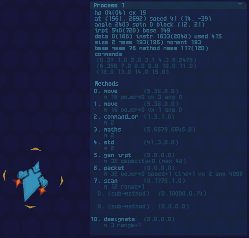

Invincible
Countermeasure
Copyright 2015 Linley Henzell
Version: beta 2
1. Introduction
Invincible Countermeasure is a game of defending/infiltrating
computer systems
(although it won't teach you anything about how to do this in
the real
world). It has singleplayer modes and also supports play-by-email
multiplayer; networked multiplayer may be implemented sometime
in
the future.
This is the manual. Fortunately, you don't need to read it to play the
game - it's mostly a detailed reference for advanced players, so if you
just want to play then start up the game and play the tutorials and
missions.
You can get basic help about what most of the buttons and other objects
in the menu interface (although not currently the game interface) by
right-clicking on them with your mouse.
You can also change some of the game's settings (like the size of the
game window, fullscreen, sound volume etc) by editing init.txt.
Invincible Countermeasure is licensed under the GPL v3 (or
later), and source
code is available online. To build it you will need a C compiler (I use
gcc) with the Allegro 5 library (I have 5.0.10; 5.1 may work as well). See the comments in
m_main.c for more information about building the game.
A note on security
This
game executes user-supplied bytecode inside a simple virtual machine.
I've done my best to make sure everything the bytecode interpreter
does is bounds-checked, heavily supervised and as far away
from system calls as practicable. But I'm not a
professional programmer and I can't guarantee that the virtual
machine is bulletproof when running unknown code by other people,
especially
in its current state as an untested beta. Exercise discretion when
running other people's processes etc, particularly in bcode form!
See also the Disclaimer and Limitation clauses of the GPL (in licence.txt in the main game directory).
Contents
2. Basic things
Your task is to defend (or, perhaps, attack) a computer system,
represented on your display by a large rectangular arena. In this world
your will is executed by processes running on the system; processes can
move, sense their surroundings, attack, reproduce and many other
things. In some environments you can control them directly, while in
others they are free to make their own decisions.
2.1 Types of programs
The game recognises a few different kinds of programs:
- Processes, which are the things you see moving around on the screen and doing stuff.
- An observer program, which provides a user interface.
- One client program for each player. These supervise the players' processes.
- Possibly, an operator program that lets the player give commands directly to their processes.
- A system program, which is responsible for setting the rules and administering the game.
There
are examples of each kind of program in the src subdirectory, with
prefixes indicating what kind they are (pr = process, op = operator, ob
= observer, sy = system, m = mission system). Files with the prsc
prefix use the standard command macros in the stand_coms.c file, which
means that they are designed to work with an operator. Files with just
the pr prefix are autonomous processes.
The missions subdirectory contains the same source files as the
src subdirectory, but they are used for missions. It's probably best to
leave them alone and work in the src subdirectory.
2.1.1 Processes
Each process is a small (<=8KB) bytecode program running in a
16-bit virtual machine. The game comes with a number of pre-written
processes you can use, and you can write your own using the game's
built-in C compiler
and assembler.
Processes use three resources:
- They are made out of data, which
can be gathered with an
allocation method (a process with an allocation method is immobile). Different shapes and sizes of process cost different
amounts of data to create.
- To perform actions using their methods they need interrupts
(irpt), which can
be generated by an interrupt generation method.
- Instructions
are consumed when a process performs basic computations
and are replenished each time the process runs (which is usually once
each
16 ticks, or about twice a second).
Each process has an interface
which allows it to interact with other
processes and the world around it. A process' interface gives it shape
and size and also sets out a range of methods
that the process can use.
Methods affect a process' characteristics or give it access to some
kind of special function. Some methods are external and can be seen on
the outside of the
process' interface, like the Move
method that allows a process to move
around, while others are internal, like the Maths method that
performs
various calculations.
One way that processes can interact with each other is by generating
destructive data packets, and if a process absorbs too many of these it
will be explosively deallocated. Achieving your goals will probably
involve deallocating your opponents in this way, but exactly what your
objective is will depend on the nature of the computer system you are
trying to control.
2.1.2
System programs
The system is controlled by a system program, which is a bytecode
program running in the same kind of virtual machine as a process but
with a range of special privileges. A system program's interface
defines the
arena in which the conflict takes place, and a system program has
access to a special set of methods that give it control over basically
everything. System programs don't require data, but are subject to
(generous) limits on interrupts (3000 per tick) and instructions (30000
per tick).
Among other things, a system program can spawn processes - and it is
this capability that an attacker must exploit.
2.1.3
Observer programs
You will need some way to watch what's going on, and this is what an
observer program is for. It has access to methods that can read user
input from the mouse and keyboard, move the viewing screen's "camera"
around and present various forms of information to you. However, it
can't interact with processes directly.
The system program may prevent the use of an observer program, as all
of an observer's functions can be performed by an operator program (see
below) or by the system itself.
Like system programs, observers execute once per tick and have 3000
interrupts and 30000 instructions to play with.
2.1.4
Client programs
Each player (including computer-controlled players) can have
its own client program, if the system allows it.
A client program serves as a kind of supervisor, keeping track of what
your processes are doing and issuing commands through a special command
method. Client programs
execute each tick and have the same interrupt and instruction limits as
system programs and observers.
There are two kinds of client programs: operators and delegates. Which
kind you can use depends on the system program's settings.
2.1.5
Client (operator)
An operator is a client program that also has access to the observer
methods that allow user input and exercise control over the user interface. Basically, an
operator lets you play the game directly, by turning mouse clicks and
keystrokes into commands issued to your processes.
2.1.6
Client (delegate)
A delegate is just like an operator that can't use observer methods. It
can supervise your processes and coordinate their activities but it
can't read user input, so it has to be able to work autonomously.
If the system allows you to use an operator, you can use a delegate
instead and waive the right to issue commands directly. If you do this,
you'll probably also want to load an observer (or you won't have much
of a user interface).
2.2
Templates
You can open the template menu by clicking on the little "Te" button
near the top right of the screen.
To load any kind of program into the game, you need to put it into a
template. When the game first starts the only open template is for a
system program, but when you start playing you may be able to use
process, observer, delegate and operator templates as well (exactly
which types are available depends on the rules set by the system
program). Process templates can be used by the system program to
introduce processes into the world, and when one process creates
another process it can copy the new process' code from a process
template. The system program can also load observer, delegate and
operator programs from the respective templates.
You can load a file directly from disk into a template using the "load
file" button on the template display. Two types of file are accepted:
compiled bcode (bytecode) files (with a .bc extension) and source files
(with a
.c extension). When you load a source file the code is compiled
automatically; if there is an error, the error message appears in the
message log at the bottom of the template window.
You can also import a file from an open tab in the code editor using
the "import from editor" button.
If you don't need a file in a template any more, you can clear the
template with the "clear" button.
2.3
Code editor
To open the code editor, click on the little "Ed" button near the top
right of the screen.
The code editor is a basic integrated development environment for
the game's built-in compiler and assembler. You don't have to use it -
you can use another program entirely to edit your source files (I use
Code::Blocks), then use them by loading directly into templates - but
it has some features that can be useful, like test compilation and code completion for various keywords.
The File, Edit and Find menus contain basic editor functions that do
obvious things. Note that editing or saving a file that is loaded into
a template will not change the version in the template, so you will
need to clear and
reload the template to update it.
The Build menu gives you various tools for testing and analysing code
(although since loading a source file into a template
automatically invokes the compiler, you don't strictly need to use any
of them). The Build menu has the following functions:
- Test build
- This attempts to compile the currently open tab. If
successful, the results are discarded.
- Build bcode
- This attempts to compile the currently open tab, and if
successful it puts the result in a new bcode tab (although this may not
be very useful, as the editor can't do much with pure bcode).
- Build asm
- This attempts to compile the currently open tab into
assembly language, and puts the result in a new tab.
- Crunched asm
- This does the same as Build asm, but tries to shorten
the generated asm code by fitting multiple instructions on each line
(because with one instruction per line, generated asm is often too long
for the editor).
- Convert bcode
- If the currently open tab is a bcode tab, this converts
it into editable asm format. It will just be numbers, though (I may get
around to writing a disassembler at some point).
Import bcode
- Use this during a game to import bcode from the currently
selected process (this is the process whose information is being
displayed in the process information box in the game display). The
process' current bcode state will be copied directly into a new bcode
tab.
Some limitations of the
editor:
- Source files can't be longer than 2000 lines;
- Each line of a source file can't be longer than 160
characters.
These are also limitations of the compiler, which can't load files that
have too many lines (you can get around this with #include) and will have problems with files with lines that
are too long (you'll get a warning).
2.4 Menu interface
When you first start the game, you are in the start-up screen.
The left side of the screen has a game menu with the following options:
Missions
- Start playing a single-player mission.
Advanced missions- Start playing an advanced single-player mission.
- Tutorial
- Start playing the tutorial. Try this first!
- Use System File
- Start a game from a system file loaded into the
system file template (which is in the templates panel on the right-hand side of the screen).
- Load Saved Game
- Load a saved game (*.sav) from disk.
- Load Gamefile
- Load a gamefile (*.gam) from disk. Used for multiplayer
games.
- Exit
- Exit.
Panel buttons
A row of icons in the top right of the screen lets you switch what the
panel on the
right-hand side of the screen is used for:
- Te (Templates)
- Opens the template menu.
- Ed (Editor)
- Opens the code editor and compiler.
When you are playing the game, three more buttons appear:
- Pr (Programs)
- Gives you information about the performance of the
system file and other programs.
- Sy (System menu)
- Opens a menu allowing you to start/stop the game,
save to disk etc.
- X (Close)
- Closes the panel so you can see more of the game.
3.
Playing the game
There are two basic ways to begin playing the game: starting a mission,
and loading a system file.
3.1 Missions
Missions are pre-set single-player games. Some of them are tutorials,
which you should probably play through before you try anything else.
When
you open the Missions menu, a number of default mission templates open
in the template panel. Programs loaded into these will be available at
the start of each mission you play until you exit the game. They start
preloaded with a basic operator, a factory and a defender process, but you can change these if you want to.
There
are also advanced missions: these are the same as the normal missions
but do not allow operator programs, so you will have to use a delegate
(or autonomous processes).
3.2 Starting from a system file
To
use a system file, load it into the System File template (which is in
the Template panel to the right of the main menu), then click on
the Use System File
button in the main menu. This will open a setup menu which lets you set
the game's basic
parameters (unless the system program has made them unmodifiable).
The setup menu works like this:
- Start
- Starts the game.
- Players
- This is the number of players, including any that are
computer-controlled. The game supports 2, 3 and 4 player games.
- Turns
- A
game can be set to last for 1 to 16 turns. If the system program allows
it, setting the number of turns to zero makes them unlimited (although
the system program can end the game and declare a winner at any time it wants).
- Turns
may not be particularly important for a single-player game, but in a
multiplayer game the end of a turn is the time when players can update
their templates before sharing turnfiles.
- Minutes per turn
- A
turn can be anything from 1 to 60 minutes long. If the system program
lets you set the turn length to zero, turns will be indefinitely long
(the system program can end them, though).
- Processes
- This is the maximum number of processes each player can
have at once (1 to 200).
- World size (x/y)
- This is the size of the world, in 128-pixel blocks (the
maximum width or height is 80 blocks, or about 10,000 pixels).
- Player names
- You can change the player names, if you like.
- Save gamefile
- Gamefiles are used for multiplayer games (see below).
- Exit
- Returns to the main menu.
3.3 Multiplayer
Currently, play-by-email multiplayer with up to four players is
supported (simultaneous networked multiplayer may happen one day, but
not yet).
A multiplayer game starts off with a system program designed
for multiplayer, which one
player or a neutral party uses to create a gamefile. Players take turns
by setting up their templates with code that gets turned into processes
in the game, and other code that supervises and directs those processes
(their delegate program). Each player makes a turnfile containing the
code in their templates, which they share with all the other players.
It's up to the players to work out how to best make use of their
templates! But the obvious ways to do so are to write new strategies
into delegate programs and update the structure and tactical code of
newly created processes (existing processes can't be reprogrammed
directly).
Detailed instructions on how to set up and play a multiplayer game:
1. One player (or a
neutral party) loads an appropriate system file into the system file
template
and clicks "Use System File" to enter the game setup menu.
2. They use the setup menu to set up the game parameters (number of
players, player names, size of world etc.)
then use the "Save Gamefile" option in the setup
menu to save a gamefile, which they then send to all players by
attaching it to an email or something like that.
3. Each player opens a copy of the gamefile using the "Load Gamefile"
button in the main menu.
4. Each player takes their turn by loading program/process files into
their templates. At this stage players can test their
processes/programs as much as they want.
5. Each player uses the "save turnfile" option at the top
of their section of the
template menu (this saves the contents of their templates to a .tf
file).
6. Each player sends their turnfile to all other players.
7. When everyone has everyone else's turnfiles, each player opens the
gamefile again and loads all of the players' turnfiles using the "load
turnfile" option in the players' sections of the template menu.
8. Each player runs the game until the turn is over or someone wins.
9. If a winner is declared, it's game over!
10. Otherwise, go to step 4.
Notes on multiplayer:
- The sy_multi.c program (in the src directory) is an
example of
a system program designed for multiplayer games.
- Operator programs can't be used. If clients are permitted,
use delegate programs
instead.
- Observer programs can be used, and can accept input. Each
player or
spectator can choose their own observer program, unless for some reason
the system program is designed not to allow this.
- Players can save and load the game at any time. In
particular, they can
save after step 8 then load the game again when it's time to go back to
step 4 for the next turn. Saved games include templates, so you don't
need to reload the
gamefile or turnfiles after loading from a saved game.
- While the game is running players shouldn't clear
or load any
templates, as this may cause desynchronisation. Only do this at step 4,
or during a test run that will be discarded.
- The game verifies each turnfile for player number and turn
number when
loading.
- There is no standard naming convention for turnfiles, other
than that
they should end in .tf, so players can agree on how to name them.
- Multiplayer relies on each player's copy of the game being
the same
version and running in exactly the same way, except for observer
programs. The same version of the game should run the same way even
across different operating systems and build environments, as long as
they perform integer calculations in a consistent way (or at least
I think it should).
- The system program shouldn't be designed to accept user
input or
communicate with
observer programs (unless you're sure you know what you're doing), as
this can cause desynchronisation.
- If the players don't trust anyone in particular to set up
the gamefile
without altering the system program in a cheaty way, they can each
compile the system program on their own computer then make their own
gamefile. As long as the system program and all of the settings (world
size etc) are the same, the gamefiles should be identical.
4.
Compiler
Invincible Countermeasure is in essence a programming game.
One way to
program it is to write directly in bytecode, but you
probably don't want to do that. Instead, you can use its
special dialect of C!
The game's built-in compiler is available from the code editor, and
is also automatically called when you load a source file into a
template. It is not a very good compiler. It has a range of limitations
and odd features, some dictated by the environment
but most resulting from the fact that I don't really know how to write
a compiler.
(What I do know about how compilers work I
learned from Serge Zaitsev's CUCU
project (quote: "Never, please, never do it this way!"),
which is the only
explanation of basic compiler design that has made any sense at all to
me. See
http://zserge.com/blog/cucu-part1.html.)
The compiler also has an inline assembler. See the Assembler chapter
below for details.
Some of the compiler's "special" characteristics are:
- It has only one basic variable type: int, which is a 16-bit
signed
integer. No floats, chars, structs or unsigned variables. It
does allow arrays of ints, with up to three dimensions.
- Pointers as a separate type are not supported. But memory
addresses are
just ints so you can, if you want, use the & address-of
operator and the * dereference operator on ints to experience some of
the
excitement of using pointers. Also, *0 is valid (although not
very useful).
- Referring to an array but leaving out a dimension
does not give a pointer
to the first element of that dimension. You have to use the &
operator to get the address of the 0 element of the dimension. Sorry :(
- It doesn't recognise statements used as
expressions. That
means no return a++;. You'll have to keep them separate, sorry :(
- Variable scope is either global (to a process) or local (to
a
function). There is no block scope.
- Operator precedence is non-standard. You can assume that
logical
operators bind more loosely than comparison operators, which bind more
loosely than arithmetic/bitwise operators, but other than that
everything is basically left-to-right. In particular, multiplication
doesn't bind more tightly than addition or subtraction. Use brackets!
- It doesn't give many warnings. Also, some of its error
messages could
probably be a little more useful.
- It doesn't do much optimisation. Actually, the only
optimisation it
does is basic constant folding (so it knows how to turn a = b + 5 + (2
* 2) into a = b + 9, although it's not smart enough to know how to fold
a = 5 + b + 4 because the constants aren't all in a row). On the bright
side the lack of optimisation leaves plenty of scope for fun with the
inline assembler.
- Octal numbers aren't supported. I hope this will not cause
any great
inconvenience. Hexadecimal numbers are supported although I haven't got
around to updating the syntax highlighter to recognise them yet.
- Binary numbers with the 0b prefix are supported (e.g. 0b11
is 3),
although the syntax highlighter doesn't know this either.
- Programs need to be designed to be executed repeatedly.
This has
consequences for variable initialisation: static variables retain their
values between executions, so you may need special
initialisation code that you wouldn't usually need in a C program.
- Currently, each source file must be no longer than 2,000
lines. If you
need a longer program you can use #include to combine multiple .c files
together. Also, each line must be no longer than 160 characters.
- There are strict limits on compiled code size, although
this is really
a game constraint rather than a limitation of the compiler. System
programs must fit in 16384 words (each word is 16 bits), processes must
fit in 4096 and all other program types have 8192. This includes static
data and the stack, as well as any sub-processes.
- There is no dynamic memory allocation (although I
guess you could implement it yourself if you really wanted to).
- There is no linker. Everything that a program needs should
be in the
same .c file, or in other .c files that are #included directly.
- There are also no header files, and the .h extension isn't
supported.
- None of the standard C libraries are available. Some things
that would
normally be done with libraries, like I/O routines and complicated
maths operations, are done using methods or special built-in functions.
- Programs can contain other programs with their own special
address
space and naming scope. See processes and sub-processes.
- Programs have a special "interface" definition at the
start, which
defines various characteristics of the program.
The programs in the src directory are full of
comments, so you could look at those if you're trying to work out how
to code in this environment.
4.1
Some C keywords that work differently
static
Declaring a variable as static should work as expected, except that it
will retain its value through repeated executions.
Declaring a function as static means something different: it makes all
of the function's local variables, including function parameters,
static by default. The overhead involved in using automatic variables
makes it a good idea to always do this unless you are using recursion or something like that.
auto
Currently, automatic arrays cannot be initialised with the syntax:
auto int hello [4] = {0,
1, 2, 3}; // this does work for static arrays, though
You will have to initialise each value separately:
auto int hello [4]; // although since auto is
the default in an automatic function and can't be used in a static function, the auto keyword
is unnecessary
hello [0] = 0;
hello [1] = 1; //
etc
Sorry.
main
The main function's type is static void main(void).
switch
Switch should work as expected, but the compiler always turns a switch
statement into a jump table. This is good where there are lots of cases
with not too much space between them, but not so good if there
are just a few cases or the cases have large gaps.
for
Because statements and expressions aren't interchangeable, for
statements must always be in the form for (<statement>;
<expression>; <statement>).
This shouldn't be a problem for basic uses like for (i = 0; i <
10; i++) but may make some tricks difficult.
exit
Since there's no stdlib, there's no exit function. I should really
write one. Until I do, you can exit by returning from main or by using the asm exit
instruction like this:
asm {exit}
Some other things that
are not supported:
variable types that are
not int
the ternary ? operator
const
typedef
sizeof
restrict
extern
register
volatile
4.2 Processes and sub-processes
Processes that create other processes don't always have to copy their
code from templates - they can copy parts of themselves into other new
processes as well. This is what process definitions are for.
A process definition looks like this:
process i_am_a_process; // this
declares/prototypes i_am_a_process as a process.
// Put it at the
start along with function prototypes.
process i_am_a_process //
this is the definition of i_am_a_process
{
// Process code
goes here.
// The process
should have an interface definition, a main function and anything
// else it will
need to be able to function independently.
// You can use #include here to include another whole file as a
sub-process.
}
In this example, i_am_a_process is a sub-process of the process in
which its definition appears, which we'll call the main process. This
means that the main process can use the code inside the process
definition to build new processes - see the details of the MT_PR_NEW
method for how to do this. Some uses of sub-processes are:
- a "factory" process can build other processes using the
code inside a
process definition,
- a core process can spawn new processes that connect to it and maybe also spawn their own nested sub-processes,
ending up
with a complex multisegmented super-process,
- a system program can copy programs from sub-processes into
templates - the compiler uses the term "process", but
sub-processes can be
other types of program (client and observer) as well.
The code inside a process definition is not directly visible to the
main process, and cannot be executed directly by the main process (as
each process definition has its own address space which assumes that
the start of the process is address 0). However, a sub-process' bcode
can be modified at runtime. Compiled code can't do this without
horrible pointer arithmetic, but the assembler has a scope command that
can be used to modify sub-processes. Modifications will apply to any
processes newly created from the modified sub-process definition.
The assembler has a corresponding type called an aspace (address
space). Each process definition also implicitly defines an aspace with
the same name for asm code to refer to.
4.3
Preprocessor
The preprocessor deals with both compiled and assembled code. It works
mostly like a standard C preprocessor, but with some differences.
The following standard directives are supported:
#include
#define
#undef
#ifdef
#ifndef
#endif
#error
The #define directive does not currently allow function-like macros.
A macro must be a single text string, and can't have parameters.
The #error directive does not currently allow an error message to be
defined (so the directive is just #error). You will get a file name and
line number report, though.
The
name of the file to be included by an #include directive should be
surrounded by quotes ("), and not angle brackets (<>).
The
path specified in the directive should be relative to the location of
the file in which the #include appears.
One potential problem with using the #define directive is that a
#defined macro stays around for the rest of the preprocessing stage, or
until #undef'd. This will cause problems if you are using #include to
bring together multiple files and some of those files use the same
macros. To help deal with this, the special #subdefine directive
produces a
macro that is only visible within the file it appears in and any file
#included by that file.
Also, these are not supported yet:
#if
#else
#elif
#line
#pragma
4.4 Memory and registers
Each program consists of a certain number of 16-bit words of
memory: 4096
(processes), 8192 (observers/clients) or 16384 (system). This contains all of the program's code and data.
The
first two addresses are taken up by a jump to the main function (or
wherever the programs starts), followed by the program's interface
definition, which is a few dozen words long (the exact length
depends
on the program type). In compiled code (but not necessarily assembled
code) the interface definition is followed by code, including any
sub-processes, then static data, then the stack. The stack grows
upwards from the end of the program.
Programs have access to a few different sets of registers:
- Processor registers
- These
are the registers used for basic computation There are eight of them, A
to H, and you don't need to worry about them unless you're writing in
assembly language. Unlike the other kinds of registers, these are reset to zero each execution cycle.
- Method registers
- Each
program has a "bank" of 64 method registers, 4 for each method slot.
Method slot 1 can use method registers 0 to 3, method slot 2 can use 4
to 7 etc. Some methods take up more than one slot and can use 8, 12 or
16 method registers. Compiled code can address method registers using
the get, put and call built-in functions.
- Method
registers have a few different purposes: they can determine what
happens when a method is called, they can contain useful information
about what the method is doing, and they can determine how a method
behaves between execution cycles. Exactly what each register
does
depends on the type of method it is associated with. The method
descriptions below have a full description of how each method
uses its
registers.
- Command registers
- Each
process has 16 command registers than can be read or written to by both
the process and the client program belonging to the same player
(allowing them to communicate with each other). The MT_PR_COMMAND, MR_PR_STD,
MT_CL_COMMAND
and MT_CLOB_STD methods can address these registers.
- System/observer shared registers
- These
registers are shared by the system and observer (or operator). They
allow communication between these programs, similarly to the way the
command registers allow a client to communicate with its processes. The
MT_OB_CONTROL
and MT_SY_MANAGE
methods can address these registers.
4.5
Built-in functions
The compiler has a number of built-in functions. Some of them give
access to basic features of the environment, while others facilitate
the use of methods so that you don't always
have to use the clunky put/get/call functions.
4.5.1
Basic built-in functions
These are always available, and can be used by all program types.
put()
int put(<constant> int method, <constant>
int method_register, int value ...)
This sets a method register to a specified value. method, which must be
a constant, is the index of the method and should be a number from 0 to
15. method_register, which should also be a constant, is the index of
the register as an offset from the first register associated with the
method. value is the value that the register will be set to. If
multiple values are passed, they are put in successive registers.
It returns 1 on success, 0 on failure.
The MB_* number tokens are built-in macros that identify each method
register for each method type. See Methods for lists
of the
MB tokens for each method.
Example:
put(METH_MOVE,
MB_PR_MOVE_RATE, 5,
16);
This sets the first register (the RATE register) of the process' move method to 5
(this
affects the rate of movement), and the second register (which affects
how long the method will be activated for) to 16. It assumes that
METH_MOVE is an enum or macro that the user has defined to specify the
index of the move method.
If either the method index or the method register index need to be
variables, you can't use put(). Use put_index() instead.
get()
int get(<constant> int method,
<constant>
int method_register);
This is the opposite of put. It returns the value in a method register.
Example:
a = get(METH_MOVE,
MB_PR_MOVE_RATE);
put_index()
int put_index(int method_register, int value ...)
This is like put(), but method_register is the target register's index
in the whole bank of method registers. Each process has 64 registers in
its method bank, and each method has 4 registers assigned to it (or 8,
12 or 16 if the method takes up multiple slots). Unlike in put(),
method_register can be a variable.
Example:
put((METH_MOVE * 4) +
MB_PR_MOVE_RATE, 5, 16);
This does the same thing as the example given for put() above.
get_index()
int get_index(int method_register)
This is the get version of put_index().
Example:
a = get((METH_MOVE * 4) +
MB_PR_MOVE_RATE);
call()
int call(int method, <int value ...>)
This calls a method and returns the method's return value. method
should be the index of the method (0-15). What actually happens when a
method is called depends entirely on what kind of method it is; some
need to be called to do anything, while others don't need to be called
at all.
If one or more values are also passed, they are put into the method's
registers (starting at register 0) before the call is executed. This
saves the need to write out a put statement before the call. Currently, you can only do this if method is a constant.
Example:
a = call(METH_DESIGNATE,
MS_PR_DESIGNATE_LOCATE);
This puts MS_PR_DESIGNATE_LOCATE into the first register of the
process'
designate method (MB_PR_DESIGNATE_STATUS), then calls the method and
leaves the method's return value in a. It assumes that METH_DESIGNATE
is an enum or macro that the user has defined to specify the index of
the designate method.
MS_PR_DESIGNATE_LOCATE is a built-in method status
macro which tells the
DESIGNATE method to find its currently designated target.
process_start()
int process_start(process process_name)
This returns the start address of a process (called process_name) that
is a sub-process of the current process. The sub-process must have been
declared previously.
It doesn't work with sub-sub-processes (you can use asm for that if you
really want to).
process_end()
int process_end(process process_name)
Just like process_start, but for the other end.
print()
void print(...)
print sends a message to a console. By default, everything you print is
coloured light grey and goes to console 0. You can change this using the MT_OB_CONSOLE
method.
print accepts three kinds of parameters:
1. String literals:
print("Hello!"); // no C-style
formatted string input, sorry
2. Expressions:
print(a + 5);
3. Addresses of null-terminated strings:
print($&string
[0]); // the $
sign tells print to treat what follows as the address of the first
element of a string
A single print statement can contain multiple kinds of things separated
by commas:
print("\nThe value is ",
value); //
\n is newline
or:
int name [10] =
{"Horatio"}; //
note that
a string being declared must be surrounded by braces
print("\nHello! My name
is ", $&name [0]);
Fixing the horrible $& syntax is on my to-do list.
data(<constant>
int mode, <various other constant
parameters>)
data is used to get various game constants that are known at compile
time, like the angle of each vertex in a particular shape. Unlike other
built-in functions it is resolved to a constant during compilation and
so
can be used anywhere a literal number could be used (e.g. in an
interface definition). Its parameters must be constants.
The modes currently available are:
- DATA_SHAPE_VERTICES
- This gets the number of vertices a shape has.
Parameters: shape
- DATA_SHAPE_VERTEX_ANGLE
- The angle of a vertex from the process'
centre. Parameters: shape, vertex
- DATA_SHAPE_VERTEX_DIST
- The distance of a vertex from the process'
centre (in pixels). Parameters: shape, size, vertex
- DATA_SHAPE_VERTEX_ANGLE_PREV
- The angle from one vertex to the
previous one. Parameters: shape, vertex
- DATA_SHAPE_VERTEX_ANGLE_NEXT
- The angle from one vertex to the next
one. Parameters: shape, vertex
- DATA_SHAPE_VERTEX_ANGLE_MIN
- This
is the lowest angle offset that a directional method at this vertex can
have while still pointing outwards. For example, if a method at a
particular vertex can be pointed from between -2500 and 3000,
this
will return -2500. These angle offsets can be used in the angle field of
the interface definition for the method, and are also relevant to
methods that can change their angle (like MT_PR_DPACKET).
- DATA_SHAPE_VERTEX_ANGLE_MAX
- The same as DATA_SHAPE_VERTEX_ANGLE_MIN, but gets the
maximum angle offset.
Examples:
a =
data(DATA_SHAPE_VERTICES, SHAPE_4SQUARE); // sets a to the number
of corners a square has. May not be so useful
vertex_angle =
data(DATA_SHAPE_VERTEX_ANGLE, SHAPE_6HEXAGON, 2); //
sets vertex_angle to the angle of a hexagon's third vertex
vertex_dist =
data(DATA_SHAPE_VERTEX_DIST, SHAPE_3TRIANGLE, 1, 2); //
sets vertex_dist to the distance from the centre of a triangular
process of size 1 to its vertex 2 (its third vertex)
4.5.2
Method-based built-in functions
These are built-in functions that facilitate the use of a particular
method. They only work in programs that include the appropriate method
in their interface.
MT_PR_STD
method built-in functions
The MT_PR_STD method
provides various standard functions, especially functions that give a process basic information about
itself and the rest of the world. These functions can only be used
by processes, and require there to be a MT_PR_STD method in the
process' interface. Most take no arguments and all return int.
- int get_x(void)
- Returns the process' x coordinate (in pixels, from
the left).
- int get_y(void)
- Returns the process' y coordinate (in pixels, from
the top).
- int get_angle(void)
- Returns the angle in which the process' vertex 0
is pointing, in integer degrees. Rightwards is angle 0, full circle is
8192.
- int get_speed_x(void)
- Returns the x component of the process'
velocity, in pixels per tick multiplied by 16 (because without
multiplication it would often be too small). Can be positive
(rightwards) or negative (leftwards).
int get_speed_y(void)
- Returns y speed. Positive is down, negative is
up.
int get_team(void)
- Returns the team (player index) that the process
belongs to. Player 1 is 0, player 2 is 1 etc.
int get_hp(void)
- Returns how many hit points the process has.
int get_hp_max(void)
- Returns the maximum hp the process can have.
int get_instr(void)
- Returns how many instructions the process has
left to execute this tick. Imprecise, as the function itself costs
instructions.
int get_instr_max(void)
- Returns how many instructions it started with.
int get_irpt(void)
- Returns how many interrupts the process has left. If the process is connected to other processes, this is the shared total.
int get_irpt_max(void)
- Returns the process' maximum number of
interrupts. If the process is connected to other processes, this returns the shared total maximum.
int get_own_irpt_max(void)
- Returns the process' maximum number of
interrupts. Is not affected by connected processes.
int get_data(void)
- Returns how much data the process has left. If the process is connected to other processes, this is the shared total.
int get_data_max(void)
- Returns how much data it can store. If the process is connected to other processes, this returns the shared total maximum.
int get_own_data_max(void)
- Returns how much data it can store. Is not affected by connected processes.
int get_spin(void)
- Returns an approximation of the process' rotation
speed, in integer angle units per tick (8192 is a full circle). Can be
positive (clockwise) or negative (anticlockwise).
int get_group_x(void)
- If the process is a member of a group of
processes joined together by MT_PR_LINK
methods, this returns the x
coordinate of the centre of the group (which is roughly the group's centre of mass). If the process is not a member
of a group, this just returns the process' x coordinate.
int get_group_y(void)
- Similar.
int get_group_x_speed(void)
- If the process is a member of a group,
returns the x component of the group's velocity (measured at the
group's centre of mass).
int get_group_y_speed(void)
- The same, for y.
int get_group_members(void)
- Returns the number of processes in the
process' group, including the process itself. Returns 1 if the process
is not a member of a group.
int get_world_x(void)
- Returns the width of the game arena, in pixels.
int get_world_y(void)
- Same, for height.
int get_ex_time(void)
- Returns the number of ticks until the process
executes again (this isn't very useful for a process, but a client may
have a use for the query version of this).
int get_efficiency(void)
- Returns the efficiency that an allocator
process would have at the process' location. This is a more expensive
operation, and costs 32 irpt.
int get_vertices(void)
- Returns the number of vertices the process has. Like
data(DATA_SHAPE_VERTICES, <shape>), but since this is a
method call it is not fixed at compile time. May be useful if the
process' shape can be changed by the process that creates it.
- int get_vertex_angle(int vertex)
- Returns the angle of one of the process' vertices.
- int get_vertex_dist(int vertex)
- Returns the distance (in pixels) from the centre of the process to one of its vertices.
- int get_vertex_angle_next(int vertex)
- The angle from one vertex to the next
one.
- int get_vertex_angle_prev(int vertex)
- The angle from one vertex to the previous
one.
- int get_vertex_angle_min(int vertex)
- The minimum offset from zero that a method at a particular vertex can have.
- int get_vertex_angle_max(int vertex)
- The maximum offset from zero that a method at a particular vertex can have.
- get_method(int method_index)
- Returns the type (MT_PR_?) of method method_index.
- get_method_find(int method_type, int number)
- Returns
the index of the first method of method_type in the process' interface,
if number is 0. If number is 1, returns the second instance of that
method type. If 2, the third (etc).
- set_command(int command_register, int value)
- Sets
one of the process' command registers to value. Note that
reading command registers requires the separate MT_PR_COMMAND method.
- set_command_bit_1(int command_register, int bit)
- Sets a bit of the value in command_register to 1. For example:
set_command_bit_1(3, 5); // sets bit 5 of register 3 to 1
- set_command_bit_0(int command_register, int bit)
- Sets a bit of the value in command_register to 0.
MT_PR_COMMAND
(process command) built-in functions
A process can use the MT_PR_COMMAND
method to read from its 16
command registers, which let it communicate with a client or operator
program (writing to its command registers just requires the MT_PR_STD method). The built-in functions are:
- int get_command(int command_register)
- This returns the contents of a command register (0-15).
- int get_command_bit(int command_register, int bit)
- This gets a single bit from a command register. For example:
a = get_command_bit(3, 5); // returns 1 if bit 5 of register 3 is 1, and 0 otherwise
MT_CL_COMMAND_GIVE
(client command-give) built-in functions
- A client can use the MT_CL_COMMAND_GIVE method
to write to the command registers of its processes.
int command(int process_index, int command_register, int
value)
- This sets a specified command register belonging to a
specified process
to a specified value. It takes only one value at a time.
int command_bit_1(int process_index, int command_register, int bit)
- This sets a specified bit of a specified command register belonging to a
specified process
to 1.
int command_bit_0(int process_index, int command_register, int bit)
- This sets a specified bit of a specified command register belonging to a
specified process
to 0.
MT_CLOB_COMMAND_REC
(client/observer command-receive) built-in functions
- A client or observer can use the MT_CLOB_COMMAND_REC method
to read the command registers of processes.
- int check_command(int process_index, int command_register)
- This returns the contents of a specified command register
belonging to
a specified process. The process must belong to the same player as the
client program (or any player if the method is being used by a system
or observer
program).
int check_command_bit(int process_index, int command_register, int bit)
- This returns the contents of a specified bit of a specified command register
belonging to
a specified process. The process must belong to the same player as the
client program (or any player if the method is being used by a system or observer
program).
MT_CLOB_QUERY
(query) built-in functions
The MT_CLOB_QUERY method
is like the INFO method, but it is used by client or
observer methods to get information about processes. Most of the
get_*() built-in INFO functions have corresponding query functions
which are used in the same way, except that the query function takes a
process index as an argument. The process does not have to be
controlled by the same player as the client/observer program.
Example:
a =
query_x(process_index);
This sets a to the x coordinate of the process with the index
process_index.
Unlike get_* functions, query functions can be called against
non-existent processes. If the specified process does not exist, a
query function will usually return -1. However, if a process is
destroyed its index will be reserved for several ticks afterwards,
during which time it is being de-allocated and its index will not be
re-used, and a query will return -2 instead. Calling a query function
that should not otherwise return a negative number (e.g. query_hp(...))
allows a client/observer process to check whether a process exists.
Some of the get functions do things that client processes can do better
with other methods, so there are no built-in query functions for these
(although call can be used instead if for some reason you want to).
These are get_world_x(), get_world_y() and get_efficiency().
One
query function that doesn't have a get equivalent is query_mbank(int
process_index, int method_register), which returns the value of a
method register of a process (and is equivalent to the process calling
get_index()).
MTYPE_CLOB_WORLD
(world information) built-in functions
The MTYPE_CLOB_WORLD
method gives a client/observer/system program
information about the parameters of the game.
- int world_x(void)
- Returns the width of the game area (in pixels).
- int world_y(void)
- Same, for height.
- int world_processes(void)
- Returns the maximum number of processes
that can exist in the world.
- int world_processes_each(void)
- Returns the maximum number of
processes that each player can have at once.
- int world_team(void)
- For a client program, returns the program's
player index. Returns -1 for observer and system programs.
- int world_teams(void)
- Returns the number of players.
- int world_first_process(void)
- For a client program, returns the
lowest index that a process controlled by this player can have (so
player 1 might control indices 0-99 while player 2 controls 100-199 and
player 3 controls 200-299). Produces undefined results for other
program types (they can call the method directly with a parameter to
find out this value for particular players).
- int world_last_process(void)
- Like world_first_process(), but returns
the highest process index.
- int world_time(void)
- Returns the number of ticks elapsed so
far. This overflows easily, so after the program's WORLD method is
called in this way, register 1 of the method holds the number of
ticks divided by 32,767.
MT_PR_MATHS/MT_CLOB_MATHS
(mathematics) built-in functions
These all require either the MT_PR_MATHS
or the MT_CLOB_MATHS
method.
Because only integers are available, the trigonometric functions use an
integer angle system in which 0 is directly right and 8192 is a full
circle clockwise (so 2048 is down, 4096 is left and 6144 is up). Angles
less than 0 or greater than 8191 just wrap around, so you don't need to
bounds-check angle values. There are a number of built-in macros for
angles: ANGLE_1 is a full circle (8192), ANGLE_2 is a half circle
(4096) etc all the way to ANGLE_32.
A limitation of the maths functions is that they cannot be used as
parameters of each other or themselves (this is because they are simple
wrappers around the call function, and trying to call the maths method
like this causes its registers to be overwritten with each call). So,
for example, you can't do this:
a = angle_difference(1000, atan2(y,
x)); // the call
to atan2
overwrites values needed for the angle_difference call before it can be
executed
Use variables to store the intermediate steps instead (this is actually
a limitation of all method-based built-in functions, but it's most
significant for the maths ones).
- int hypot(int y, int x)
- Returns the hypotenuse of y and x. Useful for
distance calculations.
- int sqrt(int value)
- Returns the square root of value. Returns 0 if
value <= 0.
- int pow(int value1, int value2)
- Returns value1 to the power of value2.
- int abs(int value)
- Returns the magnitude of value.
- int angle_difference(int angle1, int angle2)
- Returns the magnitude of
the shortest distance (in integer degrees) between angle1 and angle2.
Takes account of wrapping, so if you call, for example,
angle_difference(8000, 100) it will correctly return 292 instead of
7900.
- int signed_angle_difference(int angle1, int angle2)
- Like
angle_difference(), but returns a signed value (calculated from angle1)
instead of a magnitude (so, for example, signed_angle_difference(300,
100) returns -200).
- int turn_direction(int angle1, int angle2)
- Returns the direction of
the closest way from angle1 to angle2: returns 1 for clockwise, -1 for
anticlockwise and 0 if the angles are same (for example,
turn_direction(5000, 3000) returns -1).
- int sin(int angle, int value)
- Returns the sine of angle (which should
be in integer degrees) multiplied by value. Its most obvious use is to
determine the y component of a line that has angle (angle) and is
(value) pixels long.
- int cos(int angle, int value)
- Returns a cosine multiplied by value.
Use this to determine the x component of a line.
- int atan2(int y, int x)
- Returns an arctangent, in integer degrees
(equivalent to C's atan2 function). This function is useful for getting
the angle of a line joining two points, but it is relatively expensive.
5. Interfaces
Each program must have an interface definition, which sets out what
methods it has available to it. For processes, the interface definition
also determines the shape and size of the process. For system programs,
the interface definition sets the basic parameters of the game.
5.1 Process interface
Process interface definitions are in the following format:
interface
{
(program type),
(process shape),
(process size),
(base vertex),
{
{
(method type),
(method vertex),
(method angle),
(method extension 0),
(method extension 1),
(method extension 2)
},
{
(method type),
(method vertex),
(method angle),
(method extension 0),
(method extension 1),
(method extension 2)
},
{
etc... (up to 16 methods)
}
}
}
Program type
- For a process, the program type must be
PROGRAM_TYPE_PROCESS. Other types are:
- PROGRAM_TYPE_DELEGATE
- PROGRAM_TYPE_OPERATOR
- PROGRAM_TYPE_OBSERVER
- PROGRAM_TYPE_SYSTEM
Process shape
- This is the shape (octagon, pointy hexagon, diamond etc)
that embodies the process. See process
shapes/sizes.
Process size
- From 0 to 3. The size of a process determines how durable
it is, how much it costs to build, how much irpt and data it can fit in
its buffers and how much method mass it can have. See process
shapes/sizes.
Base vertex
- The is the default vertex that will be directly
next to the parent process, if the parent process' NEW method specifies
the child vertex as -1.
- Methods
- A process can have up to 16 of these, as long it has enough
capacity for their mass.
- Method type
- One of the MT_PR_*
values. MT_PR_NONE (0) means no method.
- Method vertex
- If
the method is an external method, this is the vertex it will be
installed into. Only one method can be at each vertex. This value
doesn't matter for internal methods.
- Method angle
- If
the method is a directional external method, this is an offset to the
angle it points in. 0 means the method will point directly away from
the centre of the process, -ANGLE_4 will point 90 degrees anticlockwise
from that, etc.
- Methods can't point inwards. If
you try to set a method pointing inwards, its angle will be corrected
to the nearest valid angle.
- If you want to set
an angle with reference to the whole process' angle (for example, you
want to point a MOVE
method directly backwards) you can set the angle
value to the angle you want the method to point in relative to the
process' angle, minus the angle of the vertex. See the MOVE methods in
the example just below.
- Extensions
- Some methods can be optimised in various ways by giving
them extensions. See Extensions.
- A method can have at most 4 total levels of extensions.
- Error methods
- If
there's something wrong with a method in an interface definition, it
might be replaced by an error method that indicates what went wrong
(for example, you tried to put two methods on a single vertex). See special methods.
- Method enums
- If you put a label in front of a method definition, it will be
turned into an enum with a value equal to the index of that method
(even if there are gaps). Thanks to Peter Hull for coding this!
Example of a process interface:
interface
{
PROGRAM_TYPE_PROCESS, SHAPE_4POINTY, 3, 3, // program type, shape,
size (from 0-3), base_vertex
{
METH_MOVE1: {MT_PR_MOVE, 1, ANGLE_2 - data(DATA_SHAPE_VERTEX_ANGLE,
SHAPE_4POINTY, 1)}, //
acceleration method on vertex 1, pointing 180deg (ANGLE_2) relative to
vertex 0
METH_MOVE2: {MT_PR_MOVE, 3, ANGLE_2 - data(DATA_SHAPE_VERTEX_ANGLE,
SHAPE_4POINTY, 3)}, //
acceleration method on vertex 3, pointing 180deg (ANGLE_2) relative to
vertex 0
METH_COM: {MT_PR_COMMAND}, //
command method. allows process to communicate with operator/delegate
METH_MATHS: {MT_PR_MATHS}, //
maths method. allows trigonometry etc.
METH_STD: {MT_PR_STD}, // standard process method. does several basic things like giving access to process's current properties
(location etc)
{MT_PR_IRPT}, //
generates irpt. functions automatically (although can be configured not
to)
METH_PACKET: {MT_PR_PACKET, 0, 0, 1, 1, 1}, // packet method. allows
process to attack.
METH_SCAN: {MT_PR_SCAN}, //
scan method. allows process to sense its surroundings. takes up 3
method slots
{MT_NONE}, //
space for scan method
{MT_NONE}, //
space for scan method
METH_DESIGNATE: {MT_PR_DESIGNATE}, // designator. allows
process to keep track of a target acquired through scan
}
}
5.2
Client/observer program interface
These are like
process interfaces, except that they do not specify a shape, size or
base vertex. Since no client/observer methods are external or have
extensions, these kinds of interfaces can be a bit simpler.
For example, this is an interface for an operator program:
interface
{
PROGRAM_TYPE_OPERATOR, // program's type
{
{MT_OB_INPUT}, //
input method - allows reading of user input
{MT_CL_COMMAND}, //
command method - allows operator to communicate with processes
{MT_CLOB_POINT}, //
point check - allows operator to find what is at a particular point
{MT_OB_VIEW}, //
view - allows interaction with display
{MT_NONE}, //
makes space for view method
{MT_OB_SELECT}, //
select - allows operator to set display elements indicating selected
process
{MT_OB_CONSOLE}, //
console - allows operator to control console windows
{MT_CLOB_WORLD}, //
world - gives information about the game world
{MT_CLOB_QUERY}, //
query - allows operator to get information about processes (similar to
MT_PR_INFO)
{MT_CLOB_MATHS}, //
maths method (works the same way as MT_PR_MATHS)
{MT_CLOB_SCAN}, //
scanner - similar to MT_PR_SCAN but with some additional features
{MT_NONE}, //
makes space for scan method
{MT_NONE}, //
makes space for scan method
{MT_OB_CONTROL}, //
control - allows operator to query various things about the user
interface
}
}
5.3
System program interface
System program interfaces are a bit more complicated, because they need
to set out some of the game rules right at the start.
interface
{
(program type),
{Options: number of players},
{Options: number of turns},
{Options: length of each turn, in minutes},
{Options: number of processes each player can have},
{Options: number of packets each player can have},
{Options: width of game area, in 128-pixel blocks},
{Options: height of game area},
(allow player clients),
(player number of operator),
(allow user observer),
{(whether player 0 may change its client template), (whether
player 1 may do so), etc.},
{(whether player 0 may change its process templates),
(whether player 2 may do so), etc.},
{
{
(method type), // this is the only field
that is actually used
(method vertex), // vertex, angle and
extension are only relevant to processes
(method angle),
(method extension 0),
(method extension 1),
(method extension 2)
},
{
(method type),
(method vertex),
(method angle),
(method extension 0),
(method extension 1),
(method extension 2)
},
{
etc... (up to 16 methods)
}
}
}
- Options
- Options determine
the range of options that are available to the user in the game setup
menu when starting a game using this system program.
- They are in the format:
{(whether user can change
this setting (0 or 1)), (default value), (minimum value), (maximum
value)}
- If the first field is 0, the user won't be able to change
this value. The (default value) will be used.
If (minimum value) or (maximum value) is 0, the minimum or
maximum possible value will be used.
- An example of the Options: number of turns field:
{1, 5, 1, 10}, // 1 means the user can
change this value. They will be able to set the turns from 1 to 10,
with a default of 5.
- An example of the Options: width of game area field:
{0, 30}, // the user can't change
this value. The area must be 30 blocks wide.
- Allow player clients
- If 1, players have access to client program templates and
can load client programs into them.
- Player number of operator
- This
is the player who gets to be the operator (i.e. they can load an
operator program into their client program template, while other
players can just load delegate programs). Set to -1 if there is no
operator.
- Allow user observer
- If 1,
there will be an observer template. If 0, there won't be. If there is
no operator, this should be 1 (unless the system program is handling
user input).
- May change client template
- The system program can lock templates so that users can't
change them. This doesn't prevent the system program making changes. An
example:
{0, 1, 1, 1}, // player 1 can't change
its client template. Players 2, 3 and 4 can.
May change process
templates
- The same, but for process templates.
This is an example of a system program interface (from the sy_multi.c
multiplayer system program):
interface
{
PROGRAM_TYPE_SYSTEM,
// The
following are: option, default, min, max
// If
min or max is left as 0, the game's actual min/max values will be used
{1, 2, 2}, //
players
{1, 3, 1}, //
turns
{1, 5, 1}, //
minutes per turn
{1, 100}, //
processes per team
{1, 400}, //
packets per team
{1, 60}, //
width of world
{1, 60}, //
height of world
1, //
allow_player_clients
-1, //
index of player who is operator (is -1 if no operator)
1, //
allow_user_observer
{1, 1, 1, 1}, //
may_change_client_template
{1, 1, 1, 1}, //
may_change_proc_templates
{
{MT_SY_PLACE_PROC},
{MT_NONE}, //
space for PLACE_PROC
{MT_SY_TEMPLATE},
{MT_SY_MODIFY},
{MT_SY_MANAGE},
{MT_NONE}, //
space for MANAGE
{MT_OB_VIEW},
{MT_NONE}, //
space for VIEW
{MT_OB_CONSOLE},
{MT_CLOB_CHANNEL},
{MT_CLOB_QUERY},
{MT_CLOB_WORLD},
{MT_CLOB_MATHS},
}
}
5.4 More on process interfaces:
shapes and sizes
Each
process' interface must set a shape and size for the process. A
process' shape affects how many vertices it has available for external
methods, how robust it is, how large its irpt and data buffers are and
its maximum method mass capacity. A process' size
affects these
things as well (except for number of vertices).
The following shapes are available:
SHAPE_3TRIANGLE
SHAPE_4SQUARE
SHAPE_4DIAMOND
SHAPE_4POINTY
SHAPE_4TRAP
SHAPE_4IRREG_L
SHAPE_4IRREG_R
SHAPE_4ARROW
SHAPE_5PENTAGON
SHAPE_5POINTY
SHAPE_5LONG
SHAPE_5WIDE
SHAPE_6HEXAGON
SHAPE_6POINTY
SHAPE_6LONG
SHAPE_6IRREG_L
SHAPE_6IRREG_R
SHAPE_6ARROW
SHAPE_6STAR
SHAPE_8OCTAGON
SHAPE_8POINTY
SHAPE_8LONG
SHAPE_8STAR
Size can be 0, 1, 2 or 3.
Here's what the shapes look like, and the attributes for each size of
each shape:
The attributes are:
- base mass
- The
"mass" of a process represents how much data it consists of. The
heavier a process is, the more slowly it accelerates and
the more
momentum it carries. The data cost of creating a process is equal to
its mass. Base mass is the mass a process has with no methods at all.
- max method mass
- Each
method has a build cost which determines how much data it
costs to
add to a process, with method extensions increasing this cost. A
shape's maximum method mass is the upper limit on the amount of method
mass a process can have. If a process' interface gives it too much
method mass, any method that would cause it to go overweight is
replaced by an error.
- max hp
- This is how much damage the process can take before
deallocating. It can be increased by the MT_PR_REDUNDANCY method.
- irpt buffer
- This is how many irpt the process can hold at once. The
size of a process' irpt buffer can't be increased.
- data buffer
- This is how much data the process can hold at once. It can
be increased by the MT_PR_STORAGE
method.
5.5 The process data box
The
process data box shows up when a process is selected (at least when you
are using the observer and operator programs that come with the game).
It looks like this:

Here's what the various fields mean:
- header
("Process 1"): the number in the header is the process'
index. Process
indices are invisible to processes themselves, but
clients, observers and system programs can refer to processes
by
their indices.
- hp: how much damage the process can take (the number in brackets is the maximum).
- ex: the number of ticks until the process' next execution cycle.
- at (x,y)
speed s (x,y): this is the location of the
process (in pixels, from the top left of the world), and its speed (in
pixels per tick, multiplied by 16 to avoid underflow), and the x and y components of its speed.
- angle
is the direction the process' vertex 0 is pointing in, in integer
degrees (from 0 to 8192, where 0 is right).
- spin
is the process' rate of rotation (positive is clockwise, negative is
anticlockwise).
- block is the 128x128 pixel block the process is in (this isn't really useful, other than for debugging the game itself)
- irpt
is the process' interrupt buffer (the number in brackets is the maximum
size of the buffer). If the process is connected with other processes, this is the shared buffer.
- base
is the base upkeep cost of the process. It must pay this many irpt each
time it executes, or it will take damage and eventually deallocate.
- data
is the process' data buffer (followed by its maximum). If the process is connected with other processes, this is shared.
- instr
is the number of instructions the process had left after its last
execution, with the number available in brackets.
- used
is the number of instructions it used.
- size
is the process' size
- mass
is the total mass of the process, equal to the base mass of its shape
plus the total mass of all of its methods (the number in brackets is
the maximum mass for its shape and size).
- moment
is the process' moment of inertia (currently for a single process this
is the same as its mass). This determines how much force is needed to
make the process rotate.
- base mass is the basic mass of the process without any methods.
- method mass
is the total mass of the process' methods, with the maximum in
brackets. The process' total mass is the sum of this and its base mass.
If the process is a member of a group of linked processes, there will
be another line here:
- group mass
is the total mass of the group.
- moment
is the moment of inertia of the group as a whole. I wouldn't say that
the game simulates angular momentum very well, but it tries.
- spin
is the spin of the group as a whole.
commands
show the state of each of the process' 16 command registers.
Methods
lists the process' methods in order.
First is the name of the method, followed by its four method registers.
A method that takes up multiple slots will be followed by sub-method
slots .These also have method registers.
On the next line is the method's mass (m), followed by some
other things that depend on what kind of method it is:
- vx
indicates which vertex an external method is on.
- ang
indicates the angle an external directional method is pointing (as an
offset from angle 0 of the vertex the method is on).
- extensions,
for methods that have extensions (e.g. a scan method might have range+1).
- some methods give other information here as well (e.g. MT_PR_IRPT
gives the method's maximum generation capacity per tick).
6. Methods
A method is a special
capability, function or characteristic of a
program. Methods are part of a program's interface; each program's
interface has 16 slots for methods, although some methods take up
multiple slots.
Each type of program has a different set of methods available to it.
- A process can use MT_PR method types, like MT_PR_MOVE (which
lets a
process move) or MR_PR_IRPT
(which generates interrupts for the process
to use).
- A delegate program can use MT_CL method types, like MT_CL_COMMAND
(which
lets the delegate program issue commands to processes). Delegate
programs can also use MT_CLOB
method types, which are also available to observer programs.
- An observer program can use MT_OB method types, like MT_OB_INPUT (which
lets the observer program read user input from the mouse and keyboard).
Observer programs can use MT_CLOB method types too.
- An operator program can use all MT_CL, MT_OB and MT_CLOB
method types.
It is the ability to use user input methods as well as the command
method that lets operator programs translate user input into control
over processes.
- A system program can use all MT_CL, MT_OB and MT_CLOB
methods, as well
as MT_SY methods like MT_SY_MANAGE
(which gives the system program
overall control over the game).
- There are also MT_ERROR methods, which indicate various
kinds of error
in a program's interface definition.
All methods are fail-safe; if they receive invalid instructions, or if
they encounter an error of some kind when activated, they will return
without otherwise affecting their process or program. In some cases
they will return a value indicating why they failed.
Process methods
- Movement
(MT_PR_MOVE): Allows a process to accelerate.
- New process
(MT_PR_NEW): Allows a process to create other processes.
- New process
(sub)
(MT_PR_NEW_SUB): Allows a process to create other
processes, with some limitations that make this method more suited to
creating parts of a multi-process group than to creating whole new
processes.
- Malicious
packet (MT_PR_PACKET): Allows a process to attack other
processes.
- Directional
packet (MT_PR_DPACKET): Like MT_PR_PACKET, but can be aimed.
- Stream
(MT_PR_STREAM): More effective, but more expensive, than packet methods.
- Directional Stream
(MT_PR_DSTREAM): Like MT_PR_DPACKET for streams.
- Scan
(MT_PR_SCAN): Allows a process to scan its surroundings
for other processes.
- Interrupt
generator (MT_PR_IRPT): Allows a process to generate energy.
- Data
allocator (MT_PR_ALLOCATE): Allows a process to allocate data
from its surroundings, and also makes process immobile.
- Standard (MT_PR_STD): Provides various standard functions.
- Mathematics
(MT_PR_MATHS): Performs various calculations, including
trigonometry.
- Designate
(MT_PR_DESIGNATE): Allows a process to designate another
process as a target, then find it again.
- Link (MT_PR_LINK):
Allows a process to connect to another
process (which must also have a link method)
- Restore
(MT_PR_RESTORE): Allows a process to repair itself.
- Redundancy
(MT_PR_REDUNDANCY): Makes a process more robust.
- Broadcast
(MT_PR_BROADCAST): Sends brief messages to nearby processes.
- Listen
(MT_PR_LISTEN): Lets a process hear broadcast messages.
- Yield
(MT_PR_YIELD): Sends irpt and data to nearby processes.
- Storage
(MT_PR_STORAGE): Increases a process' data storage buffer.
- Static
(MT_PR_STATIC): Makes a process immobile.
- Command
(process) (MT_PR_COMMAND): Allows a process to communicate
with
a client program using the process' command registers.
- Virtual interface (MT_PR_VIRTUAL): Protects a process from damage, but costs a lot of IRPT.
Client methods
- Command-give
(client) (MT_CL_COMMAND_GIVE): Allows a client program to
communicate with processes via their command registers.
- Template
(client) (MT_CL_TEMPLATE): Allows a client program to copy
code from itself into a template.
Client/observer methods
- Point
check (MT_CLOB_POINT): Allows a client/observer to check
whether
a process exists at a specified point, and a few other similar things.
- Query process
(MT_CLOB_QUERY): Allows a client/observer to get
information about a process (similar to the MT_PR_INFO method).
- Scan (clob)
(MT_CLOB_SCAN): Allows a client/observer to scan
areas of the world for processes (has additional modes that MT_PR_SCAN
doesn't have).
- Mathematics
(MT_CLOB_MATHS): The same as MT_PR_MATHS.
- Standard (MT_CLOB_STD): Provides various standard functions (although not quite the same ones as MT_PR_STD).
- Command-receive (MT_CLOB_COMMAND_REC): Allows the program to read process' command registers.
Observer methods
- Input
(MT_OB_INPUT): Allows the observer to receive input from the user.
- View
(MT_OB_VIEW): Sets up the screen display in various ways.
- Console
(MT_OB_CONSOLE): Controls the placement and function of text
consoles.
- Select
(MT_OB_SELECT): Allows the observer to place minor graphical
elements on the display, to indicate things like selected processes.
- Control
(MT_OB_CONTROL): Gives various pieces of information about the
game settings, and lets the observer communicate with the system
program.
System methods
- Place process
(MT_SY_PLACE_PROC): Allows the system program to place
processes in the world.
- Template
(MT_SY_TEMPLATE): Allows the system program to manipulate
templates.
- Modify
process (MT_SY_MODIFY_PROC): Allows the system program to
change
various things about processes.
- Manage
(MT_SY_MANAGE): Allows the system program to manage various
things about the game, like declaring a winner.
Special methods
- End (MT_END): Indicates the end of a program's methods (you
don't need
to worry about this one; it's added automatically).
- Invalid type error (MT_ERROR_INVALID): Indicates an invalid
method type
in a program's interface definition.
- Duplicate method error (MT_ERROR_DUPLICATE): Some methods
cannot be
duplicated.
- Invalid vertex error (MT_ERROR_VERTEX): Indicates an
external method
with an invalid vertex (e.g. a method put on vertex 7 of a hexagon).
- Invalid mass error (MT_ERROR_MASS): Indicates that the
method would
have caused its process to be overweight.
- New sub method error (MT_ERROR_SUB): Indicates that the process was created with the MT_PR_NEW_SUB method, but a method that a
NEW_SUB method cannot create was in the process' interface.
Attributes of
process methods
- External
- An external method occupies one of the process' external
vertices
(which vertex it occupies is set by the process' interface). If two
external methods are given the same vertex, the second one will fail
and be replaced with an MT_ERROR_VERTEX error. A process can't have
more external methods than it has vertices.
- Internal
- An internal method doesn't occupy a vertex.
Automatic
- An automatic method operates between process executions,
usually based
on the settings in its method bank registers. For example, the MOVE
method can be set to accelerate the process constantly until the next
program execution 16 ticks later.
- Called
- A called method does something when called using the
compiler's call()
built-in function or the assembler's call instructions,
and may also
return a value. For example, when the MATHS method is
called it
performs a calculation on values in its method bank registers and
returns the result.
- Not called
- Does nothing when called, and returns 0.
- Directional
- An external method may point in a particular direction,
which is
determined by the angle field in its interface definition. For example,
the PACKET
method fires a packet in its specified direction. An
external method's direction generally cannot point inwards.
- Single
- A process can only have one method of this type. Any others
will be
replaced by an MT_ERROR_DUPLICATE error.
Method costs
Each process method has the following costs:
- A base data cost, which is added to the data cost (and
therefore also the irpt cost) of any process that
includes the method.
- A maintenance interrupt cost which must be paid each time
the process
executes.
- Data and interrupt costs, and maintenance irpt costs, for
each extension added to the method.
These depend on the method's cost category:
- Minimal: base data and maintenance cost 2, extension data
and maintenance cost 1
- Low: base data and maintenance cost 4, extension data and
maintenance cost 2
- Medium: base data and maintenance cost 8, extension data
and maintenance cost 4
- High: base data and maintenance cost 16, extension data and
maintenance cost 8
- Ultra: base data and maintenance cost 32, extension data
and maintenance cost 16
Some
methods also have additional costs which must be paid when the method
is used. This is mentioned in the method descriptions below.
6.1 Process methods (PR)
These start with MT_PR. Some process methods have extensions, which
make them more effective in various ways but increase their cost. A
process methods' extensions are set in the process' interface.
Movement:
MT_PR_MOVE
This method allows processes to move and rotate. It works like a jet,
accelerating the process away from the direction it is pointing, and
also generating torque.
External, directional, automatic, not called
Cost: High
Size 1 (method registers: 4)
Extensions:
0: power
Registers
- MB_PR_MOVE_RATE
- Acceleration rate (basically, power level).
- MB_PR_MOVE_COUNTER
- Number of ticks to operate for (set to zero to turn
method off)
- MB_PR_MOVE_DELAY
- Delay before starting to operate
To use:
- Set the rate register to the acceleration rate you want.
Usually
this is the maximum, which is 5+(3*power extension), but if you set the
rate register above this it will just work at the maximum.
- Set the counter register to the number of ticks that the
method
should operate for. If you set this to 16 or more, the method will
provide thrust until the process' next execution.
- Set the delay register to the number of ticks to wait
before the
method starts operating. Set to 0 if you don't want a delay. The
counter register doesn't count down during this delay.
Using it costs 2 interrupts per rate per tick. So if you set it to run
for 16 ticks at rate 5, it will cost 160 interrupts.
New:
MT_PR_NEW
This method allows a process to create another process. The new
process' bcode can be copied from the parent process' own bcode, or
from a template.
Internal, called
Cost: Ultra
Size 2 (method registers: 8)
Extensions: none
Registers
- MB_PR_NEW_STATUS
- Sets the mode of operation (see MS_PR_NEW_* values
below).
- MB_PR_NEW_VERTEX1
- The vertex of the parent process that the new
process will be created at.
- MB_PR_NEW_VERTEX2
- The vertex of the new process that will start in
contact with VERTEX1 of the parent process. Set to -1 to use the new
process' base_vertex interface value (specified in the new process'
interface definition).
- MB_PR_NEW_ANGLE
- The angle the new process will have when created
(relative to the angle of the parent process' vertex). At angle 0, the
new process' vertex set by the vertex2 register will be pointing
directly towards the parent process.
- MB_PR_NEW_START
- The start address of the new process' bcode, in the
source bcode.
- MB_PR_NEW_END
- The end address.
- MB_PR_NEW_LINK
- If both processes have MT_PR_LINK
methods at their
mutual vertices, this can be set to 1 and the processes will be
connected.
- MB_PR_NEW_TEMPLATE
- If the new process is being created from a
template, this is the index of the template (0 to 3).
Statuses
- MS_PR_NEW_NOTHING
- The method will do nothing.
- MS_PR_NEW_BC_BUILD
- The method will attempt to create a new process.
The new process' bcode will be copied from the parent process' own
bcode. The method will return an MR_PR_NEW_*
result value.
- MS_PR_NEW_BC_TEST
- The method will test whether a new process
can be created. It will make sure that the values in the method's
registers are correct, that the new process' interface allows it to be
created (e.g. it must have valid shape and size values), that the
parent process has sufficient data and irpt, and that the new process
will not collide with an existing process.
- MS_PR_NEW_BC_COST_DATA
- The method will work out the data cost of
building a new process with from the specified bcode.
- MS_PR_NEW_BC_COST_IRPT
- The same, but for irpt cost.
MS_PR_NEW_T_BUILD
- Like MS_PR_NEW_BC_BUILD, but the method will try to
build from one of its player's process templates. The
MB_PR_NEW_TEMPLATE register indicates which template to use.
- MS_PR_NEW_T_TEST
- Like MS_PR_NEW_BC_TEST, but for templates.
- MS_PR_NEW_T_COST_DATA
- Data cost of building from a template.
- MS_PR_NEW_T_COST_IRPT
- irpt cost of building from a template (currently this is the same as the data cost).
Return
values
Calling the method will return one of the following:
- MR_NEW_NONE
- No result.
- MR_NEW_SUCCESS
- The new process was successfully built.
- MR_NEW_TEST_SUCCESS
- The test was successful.
- MR_NEW_FAIL_STATUS
- Unrecognised MB_PR_NEW_STATUS value.
- MR_NEW_FAIL_TYPE
- The interface definition in the source bcode
indicates that it is not a process (this can happen if e.g. you try to
build a process from a system program).
- MR_NEW_FAIL_OBSTACLE
- The process would collide with another process,
or the edge of the map, if created (the specified location of the new
process is indicated on screen for a short time).
- MR_NEW_FAIL_IRPT
- The parent process does not have enough irpt.
- MR_NEW_FAIL_DATA
- Not enough data.
- MR_NEW_FAIL_START_BOUNDS
- The start address specified in the start
address register is out of bounds.
- MR_NEW_FAIL_END_BOUNDS
- The end address is out of bounds.
- MR_NEW_FAIL_INTERFACE
- There is a problem with the new process'
interface definition.
- MR_NEW_FAIL_TOO_MANY_PROCS
- The player already has too many processes.
MR_NEW_FAIL_SHAPE
- The shape specified in the process' interface is
invalid.
- MR_NEW_FAIL_SIZE
- The size specified in the process' interface is
invalid.
- MR_NEW_FAIL_PARENT_VERTEX
- The parent vertex register value is invalid.
- MR_NEW_FAIL_CHILD_VERTEX
- The new process vertex register value is
invalid.
- MR_NEW_FAIL_TEMPLATE
- The template index in the template register is
invalid.
- MR_NEW_FAIL_TEMPLATE_EMPTY
- The template indicated by the template register is empty.
- MR_NEW_FAIL_LOCATION
- Invalid location (only returned by the
MT_SY_PLACE method)
- MR_NEW_FAIL_PLAYER
- Invalid player index (only returned by the
MT_SY_PLACE method)
The amount of data required to create a new process is equal to the
mass of the process. A process' mass is the sum of its base mass,
determined by its shape and size (see process shapes), and the total
mass of all of its methods.
The irpt cost of building a new process is the same as the data cost.
There
is also some overhead for calling this method: 64 irpt for a build
call, and 32 irpt for any other call (such as a test, or a cost query).
If the parent process has insufficient irpt, the method will return
MR_NEW_FAIL_IRPT.
An example of a simple use of this method to create a new process based
on a sub-process of the parent process:
build_result =
call(METH_NEW,
MS_PR_NEW_BC_BUILD, // status: try to build a
new process using bcode copied from the parent process
3, //
vertex1: the new process will be built at the parent process' vertex 3
0, //
vertex2: the new process' vertex 0 will be next to the parent process'
vertex 3
0, //
angle: the new process' vertex 0 will be pointing directly towards the
parent process
process_start(name_of_new_process),
process_end(name_of_new_process),
// these address values indicate that the new process' bcode is to be
copied from a subprocess of the parent called name_of_new_process
0, //
link: the new process will not be connected to the parent process
0); //
template: not relevant
// After this
call, build_result will hold one of the MR_NEW_? values.
An example of using this method to create a new process from a template:
build_result =
call(METH_NEW,
MS_PR_NEW_T_BUILD,
// status: try to build a new process using bcode copied from a template
3, //
vertex1: the new process will be built at the parent process' vertex 3
-1, //
vertex2: the new process' base vertex will be next to the
parent process' vertex 3
0, //
angle: the new process' vertex 0 will be pointing directly towards the
parent process
0, //
start address
BCODE_SIZE_PROCESS - 1, // end address: this is
the end of the template, so the entire template will be copied
0, //
link: the new process will not be connected to the parent process
1); //
template: this is the second of the player's 4 process templates
An example of the previous call, but as a test:
test_result =
call(METH_NEW,
MS_PR_NEW_T_TEST, //
status: try to build a new process using bcode copied from a template,
but stop before actually building it
3, //
vertex1: the new process will be built at the parent process' vertex 3
0, //
vertex2: the new process' vertex 0 will be next to the parent process'
vertex 3
0, //
angle: the new process' vertex 0 will be pointing directly towards the
parent process
0, //
start address
BCODE_SIZE_PROCESS - 1, // end address: this is
the end of the template, so the entire template will be copied
0, //
link: the new process will not be connected to the parent process
1); //
template: this is the second of the player's 4 process templates
//
This is exactly the same, except for the status.
New
(sub): MT_PR_NEW_SUB
This method is the same as the MT_PR_NEW
method, except that it cannot
create new processes which have either the MT_PR_NEW method or the
MT_PR_IRPT
method, and it is cheaper (medium cost instead of ultra -
creating new processes costs the same, though). These limitations make
it suitable for doing things like creating new sub-processes linked to
a main process.
Internal, called
Cost: Medium
Size 2 (method registers: 8)
Packet:
MT_PR_PACKET
This method shoots out a malicious packet at your enemies.
External, directional, automatic, not called
Cost: High
Size 1 (method registers: 4)
Extensions:
0: power (increases damage)
1: speed (increases the packet's speed, although not its range)
2: range (increases the packet's flight time)
Registers
- MB_PR_PACKET_COUNTER
- Number of ticks after the process executes at
which the method should fire. If this is <= 0, the method won't
fire. Set to 1 to fire immediately. However, the method has an 8-tick
recycle period after firing during which it can't fire again. If the
counter reaches 1 during this period, it will fire at the end of it.
- MB_PR_PACKET_FRIENDLY
- If 1, the packet will hit friendly processes as
well as processes belonging to other players. If zero or any other
value, will only hit other players' processes. Since method registers
default to zero at program creation, you probably don't want to do
anything to this.
All you need to do to tell a packet method to fire is to set its
counter register to 1. The irpt cost of firing a packet is (2 + total
number of extensions) *
32, or 64 (0 extensions), 96 (1), 128 (2), 160 (3) or 192 (4).
Directional
packet: MT_PR_DPACKET
Like MT_PR_PACKET, but can rotate. In return for this it does a bit
less damage, has a slightly reduced speed and flight time, and
costs slightly more to use.
External, directional, automatic, called
Cost: High
Size 1 (method registers: 4)
Extensions:
0: power (increases damage)
1: speed (increases the packet's speed, although not its range)
2: range (increases the packet's flight time)
Registers
- MB_PR_DPACKET_COUNTER
- Number of ticks after the process executes at
which the method should fire. If this is <= 0, the method won't
fire. Set to 1 to fire immediately.
- MB_PR_DPACKET_ANGLE
- The method will turn towards this angle, at 32
integer degrees per tick. The angle should be an offset from the vertex
angle of the vertex the method is on. The method will not turn to an
inwards angle (it will stop at the edge). You can use the data built-in
function with the DATA_SHAPE_VERTEX_ANGLE_MIN and
DATA_SHAPE_VERTEX_ANGLE_MAX modes to work out the minimum and maximum
offsets from angle 0 that this method can point in.
- MB_PR_DPACKET_FRIENDLY
- If 1, the packet will hit friendly processes as
well as processes belonging to other players. If any other value, will
only hit other players' processes.
The irpt cost of firing a packet is (2 + total number of
extensions) * 36, or 72 (0 extensions), 108 (1), 144 (2), 180 (3) or
216 (4).
Calling this method returns its current angle.
Stream:
MT_PR_STREAM
This method shoots out a stream of malicious data at your enemies. It
is more expensive than the packet methods, and costs a huge amount of
irpt to use, but is also very powerful.
External, directional, automatic, called
Cost: Ultra
Size 1 (method registers: 4)
Extensions:
0: time (increases the amount of time the method can stay in its firing
phase)
1: range (increases the range of the stream)
2: recycle (reduces the time that it takes the method to be ready again after being used)
Registers
- MB_PR_STREAM_FIRE
- Set this to 1 to tell the method to fire as soon as it's ready.
This method has five phases:
- Ready: the method is ready to fire. It starts in this phase and automatically returns to it after the end of the recycle phase.
- Warm-up: the stream is being generated and the method is using up irpt, but no damage is being caused yet.
- Firing: the stream is causing damage. The central part of the stream gets brighter.
- Cool-down: the stream is neither causing damage nor using irpt.
- Recycle: the method can't be used.
The warm-up phase lasts for 8 ticks.
The firing phase lasts for 6 + (3 * time extension) ticks. During the firing phase, the stream causes 36hp damage per tick.
Initiating
firing consumes 2048 + (512 *
number of extensions) irpt (which is a lot). Since no single process
has an irpt buffer that large, this method can only be used on
multi-part processes.
The cool-down phase lasts for 16 ticks, then the method enters the recycle phase.
The recycle phase lasts for 96 - (16 * recycle extension) ticks, then the method returns to the ready phase.
To
use the method, set the MB_PR_STREAM_FIRE register to 1. The next time
the method is in the ready phase (which may be immediately after it
finishes executing), it will enter the warm-up phase then begin firing.
When called, the method returns:
- 0 if it is ready to fire;
- -1 if it is currently in warm-up, firing or cool-down phase;
- the number of ticks until it is ready to fire again if it is in recycle phase.
Stream:
MT_PR_DSTREAM
This
is the directional version of the Stream method. It is less powerful
than Stream, causing 24hp damage per tick rather than 36.
External, directional, automatic, called
Cost: Ultra
Size 1 (method registers: 4)
It
has an additional MB_PR_DSTREAM_ANGLE register that works just like the
MB_PR_DPACKET_ANGLE register. The method stops rotating while firing.
Scan:
MT_PR_SCAN
This method scans a square area around a process to find other
processes that
meet certain criteria. When it finds them, it copies their location
into memory, in order of distance (nearest to furthest). It also has a
secondary "examine" mode that gives more information about a particular
nearby process.
The centre of the scan can be set off from the process' actual
location, as long as the whole of the scanned area is within range. If
part of the scanned area would be out of range, the scanned area is
reduced so as to be a square that is entirely within range.
Internal, called
Cost: Medium
Size 3 (method registers: 12)
Extensions:
0: range
Registers
- MB_PR_SCAN_STATUS
- This determines what the method does when called.
Should be an MS_PR_SCAN_* value.
- MB_PR_SCAN_START_ADDRESS
- The results of the scan will be copied into
the process' memory. This should be the address of the first element of
an array large enough to hold the results.
- MB_PR_SCAN_NUMBER
- The number of processes to find. When this number
has been reached, the scan will stop.
- MB_PR_SCAN_X1
- The x offset (in pixels) of the centre of the scan from
the process' location.
- MB_PR_SCAN_Y1
- y offset.
- MB_PR_SCAN_SIZE
- The scanned area is an orthogonal square around its
centre, with the edges being this number of pixels away from the centre.
- MB_PR_SCAN_SIZE2
- Not used for the MT_PR_SCAN method (but see
MT_CLOB_SCAN)
MB_PR_SCAN_BITFIELD_WANT
MB_PR_SCAN_BITFIELD_NEED
MB_PR_SCAN_BITFIELD_REJECT
- See below for a discussion of the bitfields
Statuses
- MS_PR_SCAN_SCAN
- Performs a scan when called.
- MS_PR_SCAN_EXAMINE
- Performs examine when called.
Return value
In either mode, a successful scan returns the number of
processes found (which may be zero). An unsuccessful scan returns one
of the following result values:
- MR_SCAN_FAIL_SIZE (-1)
- Size is negative (a size that is positive but
too large is just reduced to a valid size).
- MR_SCAN_FAIL_RANGE (-2)
- Centre of scan is out of range.
- MR_SCAN_FAIL_STATUS (-3)
- Invalid status register.
- MR_SCAN_FAIL_ADDRESS (-4)
- Invalid address for results (0 counts as
invalid).
- MR_SCAN_FAIL_NUMBER (-5)
- Invalid number of results requested.
- MR_SCAN_FAIL_IRPT (-6)
- Not enough irpt to perform scan.
Bitfields
The bitfield method registers allow the scanning process to filter out
certain processes. Each process has a binary signature determined by
its team: a process on team 0 has the signature 0b0001, a process on
team 1 has 0b0010, etc.
In order for a process to be detected during a scan:
- At least one 1 bit in the process' signature must also be 1
in the WANT
bitfield;
- All bits that are 1 in the NEED bitfield must also be 1 in
the
signature;
- No bits that are 1 in the REJECT bitfield can be 1 in the
signature.
Currently the team of a process is the only value that can be filtered
in this way; this means that the NEED and REJECT bitfields are not
really useful yet. Future versions will have more values for filtering.
The most obvious use of the WANT bitfield is to find any processes that
belong to another player. To do this, set up a bitmask like this:
scan_bitmask = 0b1111 ^
(1 << get_team());
This will give player 0 a 0b1110 bitmask, player 1 a 0b1101 bitmask,
etc.
To find friendly processes only, use:
scan_bitmask = 1
<< get_team();
Example:
int scan_result [8] [2]; // can hold up to 8
results of a scan
int number_found;
int scan_bitmask;
scan_bitmask = 0b1111 ^ (1 << get_team());
number_found = call(METH_SCAN,
MS_PR_SCAN_SCAN, //
scan mode
&scan_result [0] [0], // address of first
element of result array
8, //
number of targets to find
0, //
x offset of scan centre from process
0, //
y offset
10000, //
size of scan (in pixels). Maximum range is 400-900 ??; using a very
high value just results in the maximum being used
0, //
not used for scans by processes (see MT_CLOB_SCAN)
scan_bitmask, //
BITFIELD_WANT
0, //
need bitfield
0); //
reject bitfield
After this, the scan_result array will be filled with the x/y
coordinates (as offsets from the scanning process) of up to 8 nearby
enemy processes, sorted in increasing order of distance. The variable
number_found will hold the number of processes found.
Examine mode
When called with the status MS_PR_SCAN_EXAMINE, this method gets
information about a single process at a particular location. It has the
same range as a scan. It will return 1 on success, 0 on failure.
Only some of the method's registers are relevant to an EXAMINE
operation. These are:
- MB_PR_SCAN_STATUS
- Should be MS_PR_SCAN_EXAMINE.
- MB_PR_SCAN_START_ADDRESS
- The address of the first element of an array
large enough to hold the results.
- MB_PR_SCAN_X1
- The x offset (in pixels) of the examination from the
process' location.
- MB_PR_SCAN_Y1
- y offset.
Currently the only information revealed by an examination is the
process' location (as an
offset from the examining process) and its speed. Future versions will
provide more.
Example:
int examine_result [4];
int examine_success;
int target_x, target_y, target_speed_x, target_speed_y;
examine_success = call(METH_SCAN,
MS_PR_SCAN_EXAMINE,
&examine_result [0],
0, //
this is number of targets to find - not relevant for examine (is
ignored)
200, //
x offset from examining process
0); //
y offset
// other
registers are unused in this mode
if (examine_success)
{
target_x = examine_result [0];
target_y = examine_result [1];
target_speed_x = examine_result [2];
target_speed_y = examine_result [3];
}
Cost
Calling
this method in scan mode costs 64 + (the maximum number of results
accepted * 2) + (scan_size / 8) irpt. So for a scan with a range of
1000 that accepts 4 results (no matter how many are actually found),
the cost would be 64 + (4 * 2) + (1000 / 8), or 197.
Calling this method in examine mode costs a flat rate of 48 irpt.
Interrupt
generator: MT_PR_IRPT
This method generates interrupts (irpts) that the process can use to
sustain itself and activate its other methods. It automatically generates a certain number of irpt each tick.
Internal, automatic, single
Cost: High
Size 1 (method registers: 4)
Extensions:
0: capacity
Registers
- MB_PR_IRPT_STATUS
- Holds the method's status.
Statuses
- MS_PR_IRPT_SET
- Calling the method with this status
sets it to generate the number of irpt in register 1. If this number is
too high, it will be set to maximum. It is set to maximum at process
creation, so you probably don't want to do anything to it (it's only
real purpose is to allow a process with an irpt method to self-destruct
by turning the method off, as a process with insufficient irpt takes
damage).
- MS_PR_IRPT_MAX
- Returns the number of irpt the method generates each tick.
The number of irpt that the method can generate each tick is 8 +
(4 * extension [0]).
Data
allocator: MT_PR_ALLOCATE
This method allocates data when called. A process with this method is
immobile, and can neither move nor rotate.
External, called, single
Cost: Ultra
Size 1 (method registers: 4)
Extensions: none
To use this method, call it (it can be called once per cycle, unless
another process with the same method is interfering with it). It does
not make any use of its registers.
Processes
with this method should be at least 800 pixels away from each other, or
their efficiency will be reduced. A process can use the MT_PR_INFO method
to check efficiency at its current location (whether or not it has an
allocate method itself), and a client/observer can use the MT_CLOB_POINT method
to check efficiency at any location. Low efficiency prevents it from being called each cycle.
It allocates 8 data when called,
and costs 32 irpt per data allocated.
Standard:
MT_PR_STD
This method provides various standard functions, most of the giving the process information about itself and a few of the
global parameters of the game. The compiler has a set of built-in
functions that simplify the use of this method and can do anything that
can be done by calling it directly (see MT_PR_STD
built-in functions).
Internal, called
Cost: Minimal
Size 1 (method registers: 4)
Extensions: none
Registers
- MB_PR_STD_STATUS
- When called, the method will return a value
determined by its status.
Statuses
- MS_PR_STD_GET_X
- The method returns the process' current x location
(in pixels).
- MS_PR_STD_GET_Y
- y location.
- MS_PR_STD_GET_ANGLE
- Angle (in integer units, 0-8191).
- MS_PR_STD_GET_SPEED_X
- x component of velocity (multiplied by 16, to avoid underflow).
- MS_PR_STD_GET_SPEED_Y
- y component.
- MS_PR_STD_GET_TEAM
- Which player controls this process (0 = player 1,
1 = player 2 etc.).
- MS_PR_STD_GET_HP
- Process' current hp.
- MS_PR_STD_GET_HP_MAX
- Process' maximum hp.
- MS_PR_STD_GET_INSTR
- Instructions left (imprecise as the call itself
uses instructions).
- MS_PR_STD_GET_INSTR_MAX
- Maximum number of instructions the process can have.
- MS_PR_STD_GET_IRPT
- Irpt left.
- MS_PR_STD_GET_IRPT_MAX
- Max irpt. If the process is connected with other processes, returns the shared total maximum.
MS_PR_STD_GET_OWN_IRPT_MAX
- Max irpt. Ignores other connected processes.
- MS_PR_STD_GET_DATA
- Data left.
- MS_PR_STD_GET_DATA_MAX
- Max data. If the process is connected with other processes, returns the shared total maximum.
- MS_PR_STD_GET_OWN_DATA_MAX
- Max data. Ignores other connected processes.
- MS_PR_STD_GET_SPIN
- Process' current spin, in integer units. If the
process is a group member, returns the group's spin.
- MS_PR_STD_GET_GR_X
- Centre of mass of the process' group.
- MS_PR_STD_GET_GR_Y
- Group y.
- MS_PR_STD_GET_GR_SPEED_X
- x component of velocity of group's centre
(multiplied by 16).
- MS_PR_STD_GET_GR_SPEED_Y
- y component.
- MS_PR_STD_GET_GR_MEMBERS
- Number of members of the group (returns 1 if
not a group member).
- MS_PR_STD_GET_EX_COUNT
- Ticks until process executes again (not so
useful, although its query counterpart may be useful).
- MS_PR_STD_GET_WORLD_W
- Width of game arena, in pixels.
- MS_PR_STD_GET_WORLD_H
- Height.
- MS_PR_STD_GET_EFFICIENCY
- Efficiency that a data allocator would have
at the process' current location.
MS_PR_STD_GET_TIME
- Returns the elapsed time of the world (not just the process) in
ticks. Sets register 1 to the returned value and register 2 to that
value divided by 32,767 (to avoid overflow).
- MS_PR_STD_GET_VERTICES
- Returns the number of vertices the process has.
- MS_PR_STD_GET_VX_ANGLE
- Returns the angle of the vertex in register 1.
- MS_PR_STD_GET_VX_DIST
- Returns the distance to the vertex in register 1.
- MS_PR_STD_GET_VX_ANGLE_PREV
- Returns the previous angle of the vertex in register 1.
- MS_PR_STD_GET_VX_ANGLE_NEXT
- Returns the next angle of the vertex in register 1.
- MS_PR_STD_GET_VX_ANGLE_MIN
- Returns the minimum angle of the vertex in register 1.
- MS_PR_STD_GET_VX_ANGLE_MAX
- Returns the maximum angle of the vertex in register 1.
- MS_PR_STD_ACTION
- Assigns
the action in register 1 to the next console line printed by this
process, and all further lines printed by the process until the end of
its current execution cycle. If the user clicks on this line, the
action will be available
to the operator/observer/system program, which can use it to send
commands back to the process (this is how the prsc_cfactory.c process
accepts build commands).
- See the end of this list of statuses for an example of how to use actions.
- MS_PR_STD_WAIT
- The process' next execution cycle will be delayed by the number of ticks in register 1 (to a maximum of 16 additional ticks).
- MS_PR_STD_COLOUR
- Changes
the colour of lines printed to a console. Register 1 is the colour
(uses a COL_* macro: colours are COL_DGREY, COL_LGREY, COL_WHITE,
COL_LBLUE, COL_DBLUE, COL_LRED, COL_DRED, COL_LGREEN, COL_DGREEN,
COL_LPURPLE, COL_DPURPLE).
- MS_PR_STD_SET_COMMAND
- Sets
the command register indicated by register 1 to the value in register
2. Processes need the MT_PR_COMMAND method to be able to read commands
back.
- MS_PR_STD_COMMAND_BIT_0
- Sets a particular bit of the contents of a command register to 0. Register 1 is the command register, register 2 is the bit.
- MS_PR_STD_COMMAND_BIT_1
- Sets a particular bit of the contents of a command register to 1. Register 1 is the command register, register 2 is the bit.
- MS_PR_STD_PRINT_OUT
- Sets
the process' print output to its standard output console (exactly which
console this is can be set by the operator/observer/system program).
- MS_PR_STD_PRINT_OUT2
- Sets the process' print output to its alternative output console (exactly
which console this is can be set by the operator/observer/system
program).
- MS_PR_STD_PRINT_ERR
- Sets the process' print output to its error output console (exactly
which console this is can be set by the operator/observer/system
program).
- MS_PR_STD_TEMPLATE_NAME
- Prints the name of the template (0 - 3) in register 1, as if the process had used the print command.
Each call costs 1 irpt, except for GET_EFFICIENCY, which costs 32 irpt.
How to use actions
This method can be used to attach an action
to the next line of text that the
process prints using the print command, and all other lines that it
prints until this method is called again or execution is completed. If
the user clicks on a line with an action, an operator or observer
program is informed through its MT_OB_CONSOLE
method and can do something about it (such as focus on the
process, or give it a command).
Processes themselves have no direct access to information about what
actions
the user has clicked on.
All lines printed by processes have an action with value 0 attached by
default (the example observer/operator programs use this to focus on a
process if the user clicks on a line printed by the process).
Example:
call(METH_ACTION, 1);
print("\n Click here to do A.");
call(METH_ACTION, 2);
print("\n Or here to do B.");
// If the user
clicks on either line, an action will be sent to the user's operator or
observer program
call(METH_ACTION, 0); // resets the action for any further
messages
Mathematics:
MT_PR_MATHS
This method provides maths functions more complicated than the simple
ones (add, subtract etc) that are available as basic bcode operations.
The compiler has a set of built-in functions that simplify the use of
this method and can do almost anything (save some possible
optimisations involving register re-use) that can be done by calling it
directly. For more information about this, and about the maths
functions generally, see MT_PR_MATHS
built-in functions.
Internal, called
Cost: Minimal
Size 1 (method registers: 4)
Extensions: none
Registers
- MB_PR_MATHS_STATUS
- Determines what function the method will perform
when called
- MB_PR_MATHS_TERM1
- MB_PR_MATHS_TERM2
- MB_PR_MATHS_TERM3
- These are the values the function will be performed
on.
Statuses
- MS_PR_MATHS_NONE
- Does nothing, returns 0. Is probably unnecessary.
- MS_PR_MATHS_ATAN2
- Returns atan2(term1, term2). Cost: 12 irpt.
- MS_PR_MATHS_SIN
- Returns sin(term1) * term2. Cost: 4 irpt.
- MS_PR_MATHS_COS
- Returns cos(term1) * term2. Cost: 4 irpt.
- MS_PR_MATHS_HYPOT
- Returns hypot(term1, term2). Cost: 8 irpt.
- MS_PR_MATHS_TURN_DIR
- Returns the direction (-1, 0 or 1) of the
shortest path from the angle term1 to the angle term2. Cost: 2 irpt.
- MS_PR_MATHS_ANGLE_DIFF
- Returns the magnitude of the difference between
angles term1 and term2. Cost: 2 irpt.
- MS_PR_MATHS_ANGLE_DIFF_S
- Same, but signed. Cost: 2 irpt.
- MS_PR_MATHS_ABS
- Returns abs(term1). Cost: 1 irpt.
- MS_PR_MATHS_SQRT
- Returns sqrt(term1). Cost: 8 irpt.
- MS_PR_MATHS_POW
- Returns pow(term1, term2). Cost: 4 irpt.
When using this method, be careful not to use the return value of one
call to it as a parameter of another call (as the parameter call will
overwrite part of the other call). See built-in maths functions for
more on this.
Designate:
MT_PR_DESIGNATE
This method allows a process to track another process that is within
range, without having to use the scan method to find it each cycle. A
single process can have multiple designate methods if it needs to keep
track of multiple targets.
Internal, called
Cost: Minimal
Size 1 (method registers: 4)
Extensions:
0: range
Registers
- MB_PR_DESIGNATE_STATUS
- Determines whether the method is acquiring a
target, or locating its previously acquired target.
- MB_PR_DESIGNATE_X
- x location of target (as an offset from calling
process).
- MB_PR_DESIGNATE_Y
- y location.
Statuses
- MS_PR_DESIGNATE_LOCATE
- Sets MB_PR_DESIGNATE_X/Y to the location of the
current acquired target, if it's in range. Returns 1 if the target is
found, 0 otherwise (which could mean that the target is out of range,
or no longer exists).
- MS_PR_DESIGNATE_SPEED
- Sets MB_PR_DESIGNATE_X/Y to the x and y speed of the
current acquired target, if it's in range. Returns 1 if the target is found, 0 otherwise.
- MS_PR_DESIGNATE_ACQUIRE
- Acquires target at MB_PR_DESIGNATE_X/Y offset
from process.
To use this method, call it with status MS_PR_DESIGNATE_ACQUIRE and
with MB_PR_DESIGNATE_X/Y set to the offset of another process from the
calling process. It will return 1 if successful, 0 otherwise. Then in
future cycles the process can call the method with status
MS_PR_DESIGNATE_LOCATE to get the location of the target, and MS_PR_DESIGNATE_SPEED to get its speed.
Calling with status MS_PR_DESIGNATE_LOCATE or _SPEED returns 1 if successful, and
0 if unsuccessful. A return value of 0 could mean the target is out of
range, or it could mean that the target no longer exists.
The method's range is a square extending 900 pixels in each direction
from the process (plus an additional 300 pixels for each range
extension).
Example of combining the scan and designate methods:
int scan_return, designated,
scan_bitmask;
int target_x, target_y;
int scan_result [2];
scan_bitmask = 0b1111 ^ (1 << get_team());
scan_return = call(METH_SCAN,
// method's index
MS_PR_SCAN_SCAN, // status register
(MB_PR_SCAN_STATUS) - tells the method to run scan
&scan_result
[0], // memory
address to put results of scan (MB_PR_SCAN_START_ADDRESS)
1,
// number of
targets to find (MB_PR_SCAN_NUMBER) - scanner will stop after finding 1
0,
// x offset of
scan centre (MB_PR_SCAN_X1) - scan is centred on process
0,
// y offset of
scan centre (MB_PR_SCAN_Y1) - scan is centred on process
10000,
// size of scan
(in pixels) (MB_PR_SCAN_SIZE) - very high value means maximum range
0,
//
(MB_PR_SCAN_Y2) - not relevant to this type of scan
scan_bitmask,
// this bitmask
indicates which targets will be found (MB_PR_SCAN_BITFIELD_WANT)
0, // bitmask for accepting
only certain targets (MB_PR_SCAN_BITFIELD_NEED) - not used here
0);
// bitmask for
rejecting certain targets (MB_PR_SCAN_BITFIELD_REJECT) - not used
here
if (scan_return > 0)
{
designated = call(METH_DESIGNATE,
MS_PR_DESIGNATE_ACQUIRE, //
This mode saves a target
scan_result [0], //
This is the location of the target as an x offset from the process
scan_result [1]); //
Same for y
// The DESIGNATE
method returns 1 if it is successful (which should always be the case
here, but let's check anyway):
if (designated == 1)
{
target_x = x + scan_result [0];
target_y = y + scan_result [1];
}
}
// Later, if you
want to retrieve the location of the target:
designated = call(METH_DESIGNATE,
MS_PR_DESIGNATE_LOCATE);
// This mode
saves a target
target_x = get(METH_DESIGNATE,
MB_PR_DESIGNATE_X);
target_y
= get(METH_DESIGNATE,
MB_PR_DESIGNATE_Y);
Link:
MT_PR_LINK
This method allows processes to connect to each other directly. If a
process creates another process using the MT_PR_NEW
or MT_PR_NEW_SUB
method, and if each process has an MT_PR_LINK method at the vertex that
meets the other process, and if the MB_PR_NEW_LINK register is set to
1, the processes will be connected. A group of processes connected in
this way can have as many as 16 members.
There is not (currently) any way to have two existing separate
processes join together.
External, called
Cost: Minimal
Size 1 (method registers: 4)
Extensions: none
Registers
- MB_PR_LINK_STATUS
- Determines what the method does when called.
- MB_PR_LINK_VALUE1
- The purpose of this register depends on its status
when called.
- MB_PR_LINK_VALUE2
- Same.
- MB_PR_LINK_MESSAGE_ADDRESS
- This register holds a memory address to
which messages received through the connection will be stored.
Statuses
- MS_PR_LINK_EXISTS
- Returns 1 if there is something connected to this
method, 0 if nothing connected.
- MS_PR_LINK_MESSAGE
- Sends the two value registers as a message to the
process on the other side of the connection.
- MS_PR_LINK_RECEIVED
- Returns the number of messages received from the
other process since the last cycle.
- MS_PR_LINK_SEND_IRPT
- Dends
an amount of irpt (determined by value1)
through the connection. If there is limited space in the other process'
irpt buffer, the amount sent will be reduced accordingly. There is
overhead of 24 irpt for calling this, but no limit on the amount sent.
- MS_PR_LINK_SEND_DATA
- Sends data. There is overhead of 24 irpt for
calling this, but no limit on the amount sent.
- MS_PR_LINK_NEXT_EXECUTION
- Returns the number of ticks before the
connected process will execute.
- MS_PR_LINK_DISCONNECT
- Lets go.
The method can receive up to LINK_MESSAGES_MAX messages
(currently 8),
each LINK_MESSAGE_SIZE long (currently 2).
An example of sending and receiving messages:
// the sending process
does this:
call(METH_LINK, MS_PR_LINK_MESSAGE, 100, 200);
// the receiving
process does this:
int link_message [LINK_MESSAGES_MAX] [LINK_MESSAGE_SIZE];
int number_of_messages;
put(METH_LINK, MB_PR_LINK_MESSAGE_ADDRESS, &link_message [0]
[0]); // only
need to do this once, at process initialisation
number_of_messages = call(METH_LINK, MS_PR_LINK_RECEIVED); // this call will return 1 because the other process sent 1 message
if (number_of_messages > 0)
{
// the sending process' call above will have set link_message [0] [0] to 100 and link_message [0] [1] to 200
// so here we can do
something with the messages...
}
Restore:
MT_PR_RESTORE
This method allows processes to repair themselves.
Internal, called
Cost: High
Size 1 (method registers: 4)
Extensions:
0: rate
Registers
- MB_PR_RESTORE_NUMBER
- The number of hp the method will try to restore
when called.
Example:
call(METH_RESTORE, 4); // tries to restore 4 hp.
The method can restore 1 hp per call, plus 1 for each rate extension.
It can be called once per cycle. Restoring costs 128 irpt per hp
restored, so it is not cheap.
Redundancy:
MT_PR_REDUNDANCY
This method increases the number of hp a process has.
Internal, not called, single
Cost: Minimal + special
Size 1 (method registers: 4)
Extensions:
0: extra
Registers: None
If a process has this method, its hp is increased by 40% (plus an
additional 20% for each extension). The process' mass (and therefore
also its data cost) is increased
by the same proportion.
Broadcast:
MT_PR_BROADCAST
This method allows a process to communicate with other processes that
have the MT_PR_LISTEN
method.
External, called
Cost: Minimal
Size 1 (method registers: 4)
Extensions:
0: range
Registers
- MB_PR_BROADCAST_POWER
- This is the range of the broadcast, in pixels
(the range is a square extending this number of pixels in each
direction). If this register is set too high, the maximum range will be
used.
- MB_PR_BROADCAST_ID
- This holds a bitfield message ID that listening
processes can use to screen incoming messages.
- MB_PR_BROADCAST_VALUE1
- This is the first value of the message.
- MB_PR_BROADCAST_VALUE2
- Second value (each message is 2 ints long).
Example:
call(METH_BROADCAST,
1000, 0b101, 5, 10); //
sends the message (5, 10)
to other processes within 1000 pixels (orthogonally), with a bitfield
message ID of 0b101.
The maximum range of a broadcast is 600 pixels, plus 300 for each range
extension. The cost of sending a broadcast is 32 irpt plus the
broadcast's power / 32.
Listen:
MT_PR_LISTEN
This method receives and stores messages sent by other processes using
the broadcast method.
It can only hear messages sent by processes
controlled by the same player.
Internal, called, automatic
Cost: Minimal
Size 1 (method registers: 4)
Extensions: none
Registers
- MB_PR_LISTEN_ID_WANT
- A bitfield. At least one bit of the value in this
register must be 1 in a broadcast's message ID for the message to be
received. Set this to 0 to receive no messages.
- MB_PR_LISTEN_ID_NEED
- All bits that are 1 in this value must be 1 in a
broadcast's message ID for the message to be received.
- MB_PR_LISTEN_ID_REJECT
- No bits that are 1 in this value can be 1 in a
broadcast's message ID for the message to be received.
- MB_PR_LISTEN_ADDRESS
- The address that received messages will be
recorded to. If 0, no messages will be recorded.
A listen method can receive up to LISTEN_MESSAGES messages (currently
8) between cycles, and each message is LISTEN_MESSAGE_SIZE (currently
5) ints long. When called, it returns the number of messages received
since the previous cycle.
The structure of a message is:
- LISTEN_RECORD_ID
- The message ID bitfield.
- LISTEN_RECORD_VALUE1
- The first value of the message.
- LISTEN_RECORD_VALUE2
- Second value.
- LISTEN_RECORD_SOURCE_X
- The location of the message's source when the
message was sent, as an x offset from the listening process.
- LISTEN_RECORD_SOURCE_Y
- y offset.
Example:
int messages
[LISTEN_MESSAGES] [LISTEN_MESSAGE_SIZE];
int messages_received, message_source_x_offset, message_source_y_offset;
put(METH_LISTEN, MB_PR_LISTEN_ADDRESS, &messages [0] [0]); //
only needs to be done once, at process initialisation
put(METH_LISTEN, MB_PR_LISTEN_WANT, 0xFFFF); // receive all messages -
this also only needs to be done once, at initialisation
// Now check for messages received:
messages_received = call(METH_LISTEN);
if (messages_received > 0)
{
// find
the location of the process that sent the first message
received:
message_source_x_offset = messages [0]
[LISTEN_RECORD_SOURCE_X];
message_source_y_offset = messages [0]
[LISTEN_RECORD_SOURCE_Y];
}
Yield:
MT_PR_YIELD
This method allows a process to transmit irpt and data to another
nearby process. It transfers much more slowly than the MT_PR_LINK method, but
does not require a direct connection.
External, called
Cost: Medium
Size 1 (method registers: 4)
Extensions:
0: range
1: rate
Registers
- MB_PR_YIELD_IRPT
- When called, the method tries to transfer this much
irpt to the target process.
- MB_PR_YIELD_DATA
- Same, for data.
- MB_PR_YIELD_X
- This is the location of the target process, as an x
offset from the yielding process.
- MB_PR_YIELD_Y
- y offset.
Return values
The method returns one of the following values:
- MR_YIELD_SUCCESS
- Success.
- MR_YIELD_FAIL_ALREADY
- The method has already been called this cycle.
- MR_YIELD_FAIL_SETTINGS
- One of the method's registers contains an
invalid number.
- MR_YIELD_FAIL_IRPT
- The process doesn't have enough irpt.
- MR_YIELD_FAIL_DATA
- The process doesn't have enough data.
- MR_YIELD_FAIL_TARGET
- Nothing was found at the target location.
- MR_YIELD_FAIL_FULL
- The target process had no space in its irpt or data
buffer to receive anything.
- MR_YIELD_FAIL_RANGE
- The specified x/y offsets are out of range.
Trying to send more irpt or data than the target can receive just
results in a lesser amount being transferred (unless nothing can be
transferred at all, in which the call fails).
The method has a range of 500 pixels (orthogonal square) plus 300 per
range extension, and
can transfer at a rate of 255 irpt plus 127 per rate extension, and 4
data plus 4 per rate extension. Calling it has an overhead of 32 irpt.
Storage:
MT_PR_STORAGE
This method increases the amount of data a process can store.
Internal, not called
Cost: Medium
Size 1 (method registers: 4)
Extensions:
0: capacity
Registers: none
Increases the maximum data storage by 40% plus 20% for each capacity
extension.
Static:
MT_PR_STATIC
This method makes a process immobile, like an allocate method.
It isn't particularly useful, but it's there if you need it.
Internal, not called
Cost: Minimal
Size 1 (method registers: 4)
Registers: none
Command
(process): MT_PR_COMMAND
This method allows a process to receive commands from its player's client
program. You can use the get_command() and get_command_bit() built-in functions to
call this method easily.
Each process has 16 command registers, each of which can be read and
written to by both the process and the client. Command registers are
initialised to zero on process creation, but retain their
values between executions.
This method is not needed to write to command registers; the MT_PR_STD method can do this.
Internal, called
Cost: Minimal
Size 1 (method registers: 4)
Extensions: none
Registers
- MB_PR_COMMAND_STATUS
- Read or write.
- MB_PR_COMMAND_INDEX
- Which command register is being read from.
- MB_PR_COMMAND_BIT
- If reading a single bit, this is the bit.
Statuses
- MS_PR_COMMAND_READ
- Calling with this status returns the value of the
command register in MB_PR_COMMAND_INDEX.
- MS_PR_COMMAND_BIT
- Calling with this status returns the value (1 or 0) of a single bit
(indicated by MB_PR_COMMAND_BIT) in command
register MB_PR_COMMAND_INDEX.
Virtual interface: MT_PR_VIRTUAL
This method provides a buffer that absorbs damage that would otherwise be inflicted on a process. It
can greatly increase the process' durability, but it is expensive and having it active costs a lot of irpt.
Internal, called, single
Cost: Ultra
Size 1 (method registers: 4)
Extensions:
0: capacity
1: charge rate
Maximum capacity is 96 (plus 32 for each capacity extension).
Costs an additional 64 irpt (plus 32 for each extension) each cycle while active.
Registers
- MB_PR_VIRTUAL_STATUS
- Status register. Affects what the method does when called.
- MB_PR_VIRTUAL_VALUE
- When calling the method with the MS_PR_VIRTUAL_CHARGE status, this register determines how much charge is attempted.
- MB_PR_VIRTUAL_CURRENT
- This register holds the current strength of the method. Changing it doesn't do anything.
- MB_PR_VIRTUAL_MAX
- This register holds the maximum strength of the method. Changing it doesn't do anything.
Statuses
MS_PR_VIRTUAL_CHARGE
- When called, tries to charge up the method by the amount in
register 1. The maximum amount it can be charged by is 4 (plus 3 for
each charge rate extension), and it can be charged only once
each execution cycle. There is no need to check whether the method
is fully charged, as any overcharge is ignored.
- After a virtual interface is broken by damage, it cannot be charged for a short period (96 ticks).
MS_PR_VIRTUAL_GET_STATE
- Returns
-1 if the method is active, 0 if it is inactive but can be charged, or,
if it has been broken and cannot be charged yet, the number of ticks
before it can be charged.
- MS_PR_VIRTUAL_GET_MAX
- Returns the maximum capacity of the method.
- MS_PR_VIRTUAL_DISABLE
- Turns the method off, losing all charge (but not preventing recharging for any period of time).
6.2 Client methods (CL)
These methods can be used by
operator, delegate and system programs.
Command
(client): MT_CL_COMMAND_GIVE
This method is the other side of the MT_PR_COMMAND method. It allows a
client program to communicate with all processes it controls by
writing to their command registers (the MT_CLOB_COMMAND_REC method allows clients and observers to read command registers).
Size 1 (method registers: 4)
Registers
- MB_PR_COMMAND_STATUS
- Read or write.
- MB_PR_COMMAND_PR_INDEX
- Which process is being commanded.
- MB_PR_COMMAND_CMD_INDEX
- Which command register is being used.
- MB_PR_COMMAND_VALUE
- If writing to a register, this is the value written.
Statuses
- MS_CL_COMMAND_VALUE
- Sets the command register in MB_PR_COMMAND_CMD_INDEX of the process in MB_PR_COMMAND_PR_INDEX to MB_PR_COMMAND_VALUE.
- MS_CL_COMMAND_BIT_0
- Like MS_CL_COMMAND_VALUE, but MB_PR_COMMAND_VALUE indicates a bit of the register that is to be set to 0.
MS_CL_COMMAND_BIT_1
- Like MS_CL_COMMAND_BIT_0, but sets the bit to 1.
You can use the command(), command_bit_0(1) and command_bit_1() built-in functions to
call this method easily.
Template:
MT_CL_TEMPLATE
This
method copies code from the client program to a process template (if
the system program allows process templates to be modified). It works a
lot like the MT_SY_TEMPLATE
method, except that it can only copy to the
player's process templates (so the template index is just a number from
0 to 3).
Size 1 (method registers: 4)
Registers
- MB_CL_TEMPLATE_INDEX
- This is the number of the process template (0 to 3).
- MB_CL_TEMPLATE_START
- This is the start address, in the client's bcode, of the
code to copy.
- MB_CL_TEMPLATE_END
- This is the end address.
- MB_CL_TEMPLATE_NAME
- This is the address of a null-terminated string to be used
as the name of the template. If 0, the template is not given a name.
6.3
Client/Observer methods (CLOB)
These methods can be used by clients (operators and delegates),
observers and system programs.
Check point:
MT_CLOB_POINT
Allows a client/observer to find what's at a particular location.
Size 1 (method registers: 4)
Statuses
- MS_CLOB_POINT_EXACT
- This status followed by x,y coordinates returns
the index of the process at that location (with more or less pixel
accuracy), or -1 if no process found.
- MS_CLOB_POINT_FUZZY
- Similar to EXACT, but checks a small area around
the target coordinates as well and returns the index of the closest process. May be useful for things like checking
whether the user has clicked on a process.
- MS_CLOB_POINT_ALLOC_EFFIC
- Returns the allocator efficiency (0-100)
that a process with an allocator
method would have at a particular location.
Example:
a = call(METH_POINT,
MS_CLOB_POINT_EXACT, 1000, 3000); // returns index
of process at 1000,3000
Query:
MT_CLOB_QUERY
Allows a client/observer to run the equivalent of an MT_PR_INFO method
call
for a specified process. Uses the same MS_PR_INFO_* statuses as the
INFO method. Can be called on processes controlled by other players.
Returns -1 if a process doesn't exist, unless it was destroyed in the
last few ticks in which case it returns -2.
Size 1 (method registers: 4)
Example:
x = call(METH_QUERY,
MS_PR_INFO_GET_X, 20); //
returns x coordinate of
process 20
The query_*()
built-in functions make it easy to use this method.
Scan
(clob): MT_CLOB_SCAN
Allows a client/observer to scan an area of the world, a bit like a
process' scan using the MT_PR_SCAN
method.
Size 2 (method registers: 8)
Statuses
- MS_CLOB_SCAN_SCAN
- This status works much like the MT_PR_SCAN scan, and
uses the same MB_*
macros. The differences are:
- The MB_PR_SCAN_X1 and Y1 values are absolute values rather
than
offsets. The centre of the scan can be anywhere in the game area.
- The scan's maximum size is 1200 (as CLOB methods don't have
extensions).
MS_CLOB_SCAN_RECTANGLE
- This status performs a scan over a rectangle
with specified corners, rather than a square. Its results are ordered
roughly from left to right then top to bottom, rather than from the
centre of
the scan. Also:
- The MB_PR_SCAN_X1 and Y1 values are the coordinates of the
top left
of the rectangle.
- The MB_PR_SCAN_SIZE value is the x coordinate of the bottom
right,
and the MB_PR_SIZE2 value is the y coordinate of the bottom right.
- The maximum size of the scan is 4096x4096 pixels. If it is
larger, it
will be shrunk from the right and bottom.
MS_CLOB_SCAN_EXAMINE
- Like the MS_PR_SCAN_EXAMINE call, but the
MB_PR_SCAN_X1 and Y1 values are absolute values rather than offsets.
MS_CLOB_SCAN_SCAN_INDEX
- This works in the same way as
MS_CLOB_SCAN_SCAN, but the results array is a list of process indices
rather than a list of coordinates.
MS_CLOB_SCAN_RECTANGLE_INDEX
- The rectangular version of
MS_CLOB_SCAN_SCAN_INDEX.
All calls return the number of processes found if successful, and an
MR_SCAN_FAIL_*
value if unsuccessful.
Maths
(clob): MT_CLOB_MATHS
This works just like MT_PR_MATHS,
and uses the MS_PR_MATHS_* status
values and built-in
functions.
Size 1 (method registers: 4)
Standard client/observer method:
MT_CLOB_STD
Gives a client/observer various basic functions, such as functions returning pieces of information about the game
parameters or about the client/observer itself. The world_*()
built-in functions can be used instead of some of these method calls.
Size 1 (method registers: 4)
Statuses
- MS_CLOB_STD_WORLD_SIZE_X
- Returns the width of the game area, in pixels.
- MS_CLOB_STD_WORLD_SIZE_Y
- Same, for height.
- MS_CLOB_STD_WORLD_PROCS
- The maximum number of processes that can exist.
- MS_CLOB_STD_WORLD_TEAM
- The player index number of the client (-1 for
observers).
- MS_CLOB_STD_WORLD_TEAMS
- How many players there are.
- MS_CLOB_STD_WORLD_TEAM_SIZE
- Actual number of processes for team indicated
by register 1.
- MS_CLOB_STD_WORLD_PROCS_EACH
- Maximum number of processes for each team.
- MS_CLOB_STD_WORLD_FIRST_PROC
- First process index for team indicated by
register 1 (e.g. if each team can have 100 processes, calling this for
team 2 will return 200).
- MS_CLOB_STD_WORLD_LAST_PROC
- Last process index (e.g. if each team can have
100 processes, calling this for team 2 will return 299).
- MS_CLOB_STD_WORLD_INSTR_LEFT
- How many instructions the client/observer has
left.
MS_CLOB_STD_WORLD_TIME
- Returns how many ticks have elapsed in the game. This is likely
to overflow fairly quickly, so after the method is called with this
status, register 1 holds the time divided by 32767 (also, register
holds the time % 32767).
MS_CLOB_STD_TEMPLATE_NAME
- Prints the name of a process template to a console (as if it was being printed with the print() function).
- If used by a client or operator program, register 1 holds the index (0 to 3) of the process template.
- If
used by an observer or system program, register 1 holds the index of
the player who the template belongs to, and register 2 holds the
template's index.
Command receive: MT_CLOB_COMMAND_REC
This method allows client and observer programs to read process'
command registers. If used by a client, only processes controlled by
the client can be read.
Size 1 (method registers: 4)
Statuses
- MS_CLOB_COMMAND_VALUE
- Register 1 holds the process index, and register 2 holds the index of the command register.
- MS_CLOB_COMMAND_BIT
- Register 1 holds the process index, register 2 holds the index
of the command register and register 3 indicates which bit is being
read. The method returns 0 or 1.
You can use the check_command() and check_command_bit(1) built-in functions to
call this method easily.
6.4 Observer methods
(OB)
These methods can be used by observers, operators and system programs
(but not by delegate programs).
Input:
MT_OB_INPUT
Receives input from the user.
Size 1 (method registers: 4)
What this method does when called depends entirely on the value of the
first method register.
Status
- MS_OB_INPUT_MOUSE_BUTTON
- Sets register 1 to the left mouse
button's status (a BUTTON_* value),
sets register 2 to the right mouse button's status,
and returns the mouse's status (a MOUSE_STATUS_*
value).
- Example:
int lmb, rmb,
mouse_status;
mouse_status = call(METH_INPUT, MS_OB_INPUT_MOUSE_BUTTON);
if (mouse_status != MOUSE_STATUS_OUTSIDE)
{
lmb = get(METH_INPUT, 1);
if (lmb <= BUTTON_NOT_PRESSED) // means that button not pressed (and also not just released)
rmb = get(METH_INPUT, 2);
}
MS_OB_INPUT_MODE_MOUSE_XY
- Sets registers 1 and 2 to the x and
y coordinates of the mouse, and returns the mouse's status. The
coordinates indicate the mouse's position in the game world (in
pixels), not on screen, so you do not need to adjust for camera
position.
- MS_OB_INPUT_MOUSE_SCREEN_XY
- Like MS_OB_INPUT_MODE_MOUSE_XY,
but the coordinates give the mouse's position on the game display, with 0,0 being the top left corner.
- MS_OB_INPUT_MOUSE_MAP_XY
- Like MS_OB_INPUT_MODE_MOUSE_XY, but
only works if the mouse is over the map. The coordinates indicate the
position in the game world that corresponds to the mouse's position on
the map.
MS_OB_INPUT_KEY
- Returns the status of a key (using one of
the BUTTON_* values
also used for mouse button status). The key should
be specified in register 1 as one of the KEY_* values (see Appendix A: Key codes).
- Example:
int is_a_pressed;
is_a_pressed = call(METH_INPUT, MS_OB_INPUT_KEYBOARD, KEY_A);
-
MS_OB_INPUT_ANY_KEY
- Checks
for any key being pressed, and returns its KEY_* value (or -1 if no key
being pressed). Also sets register 0 to the key's BUTTON_* status.
- If multiple keys are being pressed, it just returns one of them.
Mouse status values
(returned by all mouse method calls)
- MOUSE_STATUS_OUTSIDE
- The mouse is outside the game area (e.g. on the
editor panel, or outside the game's window). In this case, no other
values (mouse button status etc.) are set.
- MOUSE_STATUS_AVAILABLE
- The mouse is in the game area, and none of the following
statuses apply.
- MOUSE_STATUS_MAP
- The mouse is over the map.
- MOUSE_STATUS_CONSOLE
- The mouse is over a console.
- MOUSE_STATUS_PROCESS
- The mouse is over the process data display.
Mouse
button and key status values
- BUTTON_JUST_RELEASED (-1)
- The button is not being pressed, but was
being pressed until a tick ago.
- BUTTON_NOT_PRESSED (0)
- The button is not being pressed and was not
just released.
- BUTTON_JUST_PRESSED (1)
- The button was just pressed.
- BUTTON_HELD (2)
- The button is being held.
View:
MT_OB_VIEW
Controls the screen and various aspects of the user interface.
Size 2 (method registers: 8)
What this method does when called depends on the value of the
first method register.
Statuses
- MS_OB_VIEW_FOCUS_XY
- Sets the camera position (which determines what
part of the game area the user sees). Registers 1 and 2 are x/y
coordinates, in pixels.
- Example:
call(METH_VIEW,
MS_OB_VIEW_FOCUS_XY, 1000, 2000); // sets the camera so
the location 1000,2000 will be in the centre of the screen.
MS_OB_VIEW_FOCUS_PROC
- Sets the camera position so a particular process
(with the index specified in register 1) is at the centre of the
screen. Does nothing if the process doesn't exist.
- Example:
call(METH_VIEW,
MS_OB_VIEW_FOCUS_PROC, 50); //
screen will be centred
on process 50.
MS_OB_VIEW_PROC_DATA
- Opens the process data box,
and sets it to
display information about a process specified by register 1. You should
probably set the data box's location (using the next status) before
calling this.
MS_OB_VIEW_PROC_DATA_XY
- Sets the location of the top left of the data box to the
screen location indicated by registers 1 and 2.
- MS_OB_VIEW_SCROLL_XY
- Moves the screen left/right (register 1) and
up/down (register 2). Won't move it past the edges of the game area.
- MS_OB_VIEW_MAP_VISIBLE
- Sets the map on (1) or off (0) (register 1) .
- MS_OB_VIEW_MAP_XY
- Sets the x/y location of the map.
- MS_OB_VIEW_MAP_SIZE
- Sets the size of the map. Register 1 is width and
register 2 is height (both in pixels).
- MS_OB_VIEW_DISPLAY_SIZE
- Gets the size of the display. When called, the method sets register 1 to the current width of the
game area of the screen, and register 2 to the height. This doesn't
include the editor panel, if it's open. Returns 1 if the display has
been resized since the last cycle (for example, if the editor panel was
just opened or closed), and 0 otherwise.
- Example:
int screen_just_resized;
screen_just_resized = call(METH_VIEW, MS_OB_VIEW_DISPLAY_SIZE);
if (screen_just_resized)
{
print("\nScreen resized to ", get(METH_VIEW, 1), " by ",
get(METH_VIEW, 2), " pixels.");
}
- MS_OB_VIEW_COLOUR_PROC
- Changes the colours used for a player's
processes. Register 1 is the player index, register 2 is the red value
at minimum intensity, register 3 is the red value at maximum intensity,
register 4 is the green value at minimum intensity, etc. Colour values
are 0 to 255.
- Maximum intensity is the colour used for things like
undamaged
processes. Minimum intensity is used for things like badly damaged
processes and the faint underlay thing that appears underneath a
process. The maximum intensity value for a colour can be less than the
minimum, in which case that colour component increases as the intensity decreases.
- Example:
call(METH_VIEW,
MS_OB_VIEW_COLOUR_PROC, // status
0, //
player index (i.e. player 1)
180, //
red at minimum intensity
10, //
red at maximum intensity
0, //
green min
50, //
green max
0, //
blue min
210); //
blue max
// these settings make processes look blue (with a red underlay) when
undamaged, then redder the more damaged they get.
- This is a relatively expensive operation.
- MS_OB_VIEW_COLOUR_PACKET
- Just like MS_OB_VIEW_COLOUR_PROC, but changes
packet colours for a specified player.
- MS_OB_VIEW_COLOUR_DRIVE
- Changes colours produced by the MOVE method.
MS_OB_VIEW_COLOUR_BACK- Changes the colour of the background. Just uses registers 1 (red), 2 (green) and 3 (blue).
MS_OB_VIEW_COLOUR_BACK2- Changes the base colour of the hexagonal pattern in the background. Just uses registers 1 (red), 2 (green) and 3 (blue).
- MSTATUS_OB_VIEW_SOUND
- Plays
an interface sound (e.g. the blip you get when you click on a process).
Not yet fully implemented. Register 1 indicates which sample to play
(currently does nothing), register 2 indicates the tone (currently a
chromatic scale from 0 to about 40, I think), and register 3 is volume (1 to 100).
Console:
MT_OB_CONSOLE
Controls the consoles that display text printed by processes and other
programs.
Size 1 (method registers: 4)
Up to 4 consoles are available (consoles 0 to 3). For most console
method calls, register 0 is the status and register 1 is the index of
the console being affected.
Statuses
- MS_OB_CONSOLE_OPEN
- Opens a console.
- MS_OB_CONSOLE_CLOSE
- Closes a console.
MS_OB_CONSOLE_MIN- Minimises a console.
- MS_OB_CONSOLE_STATE
- Returns the state of a console. States are 0
(closed), 1 (open but minimised), 2 (open).
- MS_OB_CONSOLE_GET_XY
- Gets the on-screen location of the console. After the call,
registers
2 and 3 hold the x/y coordinates of the top left corner of the console
(if the console's header is at the top) or the bottom left corner (if
the header is at the bottom).
- MS_OB_CONSOLE_MOVE
- Sets the location of the console. Works like MS_OB_CONSOLE_GET_XY, but the other way around.
- MS_OB_CONSOLE_LINES
- Sets the number of lines in the console (when
maximised) to register 2. The maximum size is 40.
- MS_OB_CONSOLE_ACTION_SET
- Sets an action (see below).
- MS_OB_CONSOLE_ACTION_CHECK
- Checks for actions (see below).
- MS_OB_CONSOLE_CLEAR
- Clears a console's contents.
MS_OB_CONSOLE_STYLE- Changes the style of a console to a CONSOLE_STYLE value (see below). The style value goes in register 2.
- MS_OB_CONSOLE_OUT
- Sets which console the calling program's standard output is sent to.
- MS_OB_CONSOLE_ERR
- Sets which console the calling program's error output (including errors generated by the game itself) is sent to.
- MS_OB_CONSOLE_COLOUR
- Sets the colour of a
console's text to one of the following values (in register 2):
COL_DGREY, COL_LGREY, COL_WHITE, COL_LBLUE, COL_DBLUE, COL_LRED,
COL_DRED, COL_LGREEN, COL_DGREEN, COL_LPURPLE, COL_DPURPLE.
MS_OB_CONSOLE_FONT
- Sets the font of a console to one of the following (in register 2):
FONT_CODE (this is the font used in the code editor), FONT_CODE_BOLD,
FONT_BASIC (this is the default), FONT_BASIC_BOLD, FONT_BASIC_LARGE.
Also clears the console.
- MS_OB_CONSOLE_BACKGROUND
- Sets
the colour of the console's background (and header) to the value in
register 2. Colours are BCOL_GREY, BCOL_RED, BCOL_GREEN, BCOL_BLUE,
BCOL_YELLOW, BCOL_ORANGE, BCOL_PURPLE, BCOL_TURQUOISE, BCOL_AQUA,
BCOL_CYAN.
- MS_OB_CONSOLE_TITLE
- Sets the title of the console. Register 2 should hold the address of a null-terminated string. For example:
int console_name [10] = {"Commands"};
call(METH_CONSOLE, MS_OB_CONSOLE_TITLE,
0, &console_name [0]); // sets the name of console 0- MS_OB_CONSOLE_LINES_USED
- Returns
the number of lines that have been printed to the console (up to the
maximum number it can hold) since it was last cleared.
- MS_OB_CONSOLE_OUT_SYSTEM
- Sets the console to which the system program's standard output is sent.
- MS_OB_CONSOLE_OUT_OBSERVER
- Sets the console to which the observer's standard output is sent.
- MS_OB_CONSOLE_OUT_PLAYER
- Sets
the console to which standard output from a player's programs
(including client and processes) is sent. Register 1 holds the console
index and register 2 holds the player index.
- MS_OB_CONSOLE_OUT2_PLAYER
- Sets the console to which a player's alternative output is sent.
- MS_OB_CONSOLE_ERR_SYSTEM
- Sets the console to which the system's error output is sent.
- MS_OB_CONSOLE_ERR_OBSERVER
- Sets the console to which the observer's error output is sent.
- MS_OB_CONSOLE_ERR_PLAYER
- Sets the console to which error output from a player is sent. Works like MS_OB_CONSOLE_OUT_PLAYER.
Example of using a console:
call(METH_CONSOLE,
MS_OB_CONSOLE_OPEN, 0); //
opens console 0
call(METH_CONSOLE, MS_OB_CONSOLE_XY,
0, 50, 50); //
puts console 0 at
50,50 on screen
Actions
You can assign an action to a line printed to a console using the
MS_OB_CONSOLE_ACTION_SET status. If the user clicks on the line, a call
to MS_OB_CONSOLE_ACTION_CHECK will inform the observer/operator of the
action.
An MS_OB_CONSOLE_ACTION_SET call applies to the most recently printed
line in the specified console (this is different to the way the
MT_PR_ACTION process method
sets actions; they apply to all later lines
printed by the process). The values in registers 2 and 3 will be
set as the action values.
An MS_OB_CONSOLE_ACTION_CHECK call checks whether the user has clicked
on a console line with an action attached to it. It returns one of the
following values:
- CONSOLE_ACTION_NONE
- No action occurred.
- CONSOLE_ACTION_SYSTEM
- An action was found. The action was generated by
the system program.
- CONSOLE_ACTION_OBSERVER
- An action generated by the observer program
was found.
- CONSOLE_ACTION_OPERATOR
- An action generated by the operator program
was found.
- CONSOLE_ACTION_PROCESS
- An action generated by a process was found.
Note that there is no way for a delegate program to generate an action.
If an action generated by a system, observer or operator was found, the
registers will be set as follows:
Register 0: the console that the line was in.
Register 1: the first value of the action.
Register 2: the second value of the action.
If an action generated by a process was found, the registers will be
set as follows:
Register 0: the console that the line was in.
Register 1: the index of the player who controls the process (0-3).
Register 2: the index of the process.
Register 3: the value the process set for the action.
Every line printed by a process automatically attaches an action with a
value of 0 (the observer and operator programs that come with the game
use this to focus on a process when the user clicks on a line printed
by the process). The process can set a different value using the
MT_PR_STD method.
Example:
// setting the action:
print("\n >> click here to send an action!
<<");
call(METH_CONSOLE, MS_OB_CONSOLE_ACTION_SET, 0, 100, 200);
// This adds an
action to the line just printed to console 0.
// checking for
an action:
int action_detected, source_console, action_value1, action_value2;
action_detected = call(METH_CONSOLE,
MS_OB_CONSOLE_ACTION_CHECK);
if (action_detected == CONSOLE_ACTION_OPERATOR)
{
source_console = get(METH_CONSOLE, 0);
action_value1 = get(METH_CONSOLE, 1);
action_value2 = get(METH_CONSOLE, 2);
}
//
if the user clicked on the line set above in this example,
source_console would be 0, action_value1 would be 100 and
action_value2 would be 200
Console styles
The following styles are available:
- CONSOLE_STYLE_BASIC
- A basic top-down scrollable console.
- CONSOLE_STYLE_BASIC_UP
- Like BASIC, but the header is at the bottom of the console and the rest of the console extends upwards from it.
- CONSOLE_STYLE_CLEAR_CENTRED
- The console is just lines of centred text, with no background.
- CONSOLE_STYLE_BOX
- A non-scrollable box.
- CONSOLE_STYLE_BOX_UP
- Like BOX but the console extends upwards.
Select:
MT_OB_SELECT
Adds some minor graphic elements to the user interface. There can be up to 64 markers active at once.
Size 1 (method registers: 4)
Statuses- MS_OB_SELECT_SET_MARKER
- Creates a marker, and returns the index of the newly created marker (or -1 if there are no markers left).
- Register 1 sets the marker type, register 2 is how
many ticks the
marker lasts for, and register 3 is the colour. After you set a
marker, you need to place it as well, using one of the following calls.
- The colour should be one of BCOL_GREY, BCOL_RED,
BCOL_GREEN, BCOL_BLUE, BCOL_YELLOW, BCOL_ORANGE, BCOL_PURPLE,
BCOL_TURQUOISE, BCOL_AQUA or BCOL_CYAN.
- MS_OB_SELECT_PLACE_MARKER
- Places a marker at a
specified location. Register 1 is the marker's index, register 2 is x (world coordinates, not screen
coordinates) and register 3 is y.
- MS_OB_SELECT_PLACE_MARKER2
- Used for markers with two sets of coordinates (boxes and lines). Sets the
second set of coordinates (register 1 is index, register 2 is x, register 3 is y). If the marker is a box, this corner
can be in any direction from the first corner (it doesn't have to be
the bottom right of the box).
- MS_OB_SELECT_BIND_MARKER
- Binds a marker to a
process (marker index in register 1; process index in register 2). If
the marker has two sets of coordinates, this binds the first set to the
process.
- MS_OB_SELECT_BIND_MARKER2
- Binds the second set of coordinates of a line marker to a
process (marker index in register 1; process index in register 2).
- MS_OB_SELECT_UNBIND_PROCESS
- Removes all markers from a process (index in register 1).
- MS_OB_SELECT_CLEAR_ALL
- Clears all markers, with no transition animations (i.e. markers disappear instantaneously instead of fading out).
- MS_OB_SELECT_EXPIRE_ALL
- Causes all markers to expire, showing transition animations.
- MS_OB_SELECT_CLEAR
- Clears a single marker (index in register 1).
- MS_OB_SELECT_EXPIRE
- Causes a single marker to expire (index in register 1).
- MS_OB_SELECT_MARKER_SPIN
- Sets
the speed and direction a marker spins in (only relevant for the
markers that do actually spin). Register 1 is the marker index,
register 2 is the new spin (-128 to 128).
- MS_OB_SELECT_MARKER_ANGLE
- Sets
the angle of a marker. Only relevant for markers that can spin.
Register 1 is the marker index, register 2 is the new angle (0 to 8192).
- MS_OB_SELECT_MARKER_SIZE
- Sets the size of a marker. Register 1 is marker index, register 2 is size (0 to 15).
Marker
types
There are currently the following kinds of markers:
- MARKER_BASIC
- Spinning marker with 4 inward-pointing things.
- MARKER_BASIC_6
- Like BASIC, but with 6 things.
- MARKER_BASIC_8
- Like BASIC, but with 8 things.
MARKER_PROC_BOX- Draws a box around a process. Base size depends on the process' size.
MARKER_CORNERS
- Little outward-pointing arrow things.
MARKER_SHARP
- Like BASIC, but with pointier things.
- MARKER_SHARP_5
- Like BASIC, but with 5 pointier things.
- MARKER_SHARP
- Like BASIC, but with 7 pointier things.
- MARKER_BOX
- A box that appears on the game display (e.g. used for selecting groups of processes). Uses both sets of coordinates.
- MARKER_MAP_POINT
- A point that appears on the map only.
MARKER_MAP_AROUND_1- Another kind of map marker.
MARKER_MAP_AROUND_2
- Another kind of map marker.
MARKER_MAP_CROSS
- Another kind of map marker.
- MARKER_MAP_LINE
- A line that appears on the map. Uses both sets of coordinates.
- MARKER_MAP_BOX
- A box that appears on the map. Uses both sets of coordinates.
Example:
int marker, map_marker;
marker = call(METH_SELECT,
MS_OB_SELECT_SET_MARKER, MARKER_BASIC, 32, BCOL_YELLOW);
call(METH_SELECT, MS_OB_SELECT_PLACE_MARKER, marker, 1000, 3000);
map_marker = call(METH_SELECT, MS_OB_SELECT_SET_MARKER, MARKER_MAP, 32);
call(METH_SELECT, MS_OB_SELECT_PLACE_MARKER, map_marker, 1000, 3000);
//
This puts two markers at the location 1000,3000. One will be
displayed on the screen, and the other will be displayed on the map.
Both will last for about a second (32 ticks).
//
If a new marker can't be set (because there are already 64 markers),
the _SET_MARKER call will return -1 and the PLACE_MARKER calls will
just do nothing.
Example:
int marker;
marker = call(METH_SELECT,
MS_OB_SELECT_SET_MARKER, MARKER_BOX, 1, BCOL_GREY);
call(METH_SELECT, MS_OB_SELECT_PLACE_MARKER, marker, 500, 800);
call(METH_SELECT, MS_OB_SELECT_PLACE_MARKER2, marker, 700, 1000);
//
This puts a box with corners at 500,800 and 700,1000. It will last
for a single tick.
Control: MT_OB_CONTROL
Gives the observer some information about the game and allows it to
communicate with the system program.
Size 1 (method registers: 4)
Statuses
- MS_OB_CONTROL_PAUSED
- Returns 1 if the game is paused, 0 otherwise.
Can't be used to tell if the game is halted rather than paused
(as the observer
won't be running if it's halted).
MS_OB_CONTROL_PAUSE_SET
- Turns pause on (if register 1 is 1) or off (if
register 1 is 0)
- MS_OB_CONTROL_FF
- Returns 1 if the game is fast-forwarding, 0 otherwise.
MS_OB_CONTROL_FF_SET
- Turns fast forward on (if register 1 is 1) or off
(if register 1 is 0).
- Register 2 determines the fast forward mode: 0 means smooth
fast
forward mode (the game unlocks the frame rate and runs as fast as it
can), 1 means skippy mode (the game displays 1 frame per second and
between those frames runs as fast as possible), 2 means 4x speed (only 1 in 4 frames is displayed), 3 means 8x speed.
MS_OB_CONTROL_PHASE
- Returns the game phase (see game phases)
- MS_OB_CONTROL_SYSTEM_SET
- Allows the observer to communicate with the
system program. There are 64 shared registers that both can use (the
system program can use them with the MT_SY_MANAGE
method). Register 1
is the register index, register 2 is the value to set it to.
- MS_OB_CONTROL_SYSTEM_READ
- Returns the value of a system/observer
shared register. Register 1 (of the method) is the register index.
- MS_OB_CONTROL_TURN
- Returns the current turn. Returns -1 if the game
doesn't have turns.
- MS_OB_CONTROL_TURNS
- Returns the number of turns in the game. Returns
-1 if there is no specific limit, or if the game doesn't have turns.
- MS_OB_CONTROL_SECONDS_LEFT
- Returns the number of seconds left in the
current turn.
- MS_OB_CONTROL_TICKS_LEFT
- Returns the number of ticks left in the
current turn, capped at 32767.
- MS_OB_CONTROL_TURN_SECONDS
- Returns the total number of seconds in a
turn.
6.5 System methods (SY)
These methods can only be used by the system program.
Place:
MT_SY_PLACE
Places processes in the world. Similar to the MT_PR_NEW method, but the
system program can put processes anywhere and doesn't have to worry
about data costs.
Size 2 (method registers: 8)
Registers
- MB_SY_PLACE_STATUS
- Type of call. After a new process is successfully
created, holds the index of the new process. Also holds the data or
irpt cost of creating a new process after a cost query.
- MB_SY_PLACE_X
- x location of new process.
- MB_SY_PLACE_Y
- y location.
- MB_SY_PLACE_ANGLE
- Angle of new process.
- MB_SY_PLACE_ADDRESS1
- Start address of new process' bcode (in the
system program itself, or in a template).
- MB_SY_PLACE_ADDRESS2
- End address.
- MB_SY_PLACE_INDEX
- Which player will control the process.
- MB_SY_PLACE_TEMPLATE
- If reading bcode from a template, this is the
template (uses different indices from the MT_PR_NEW method, because the
system program can use all templates - see below).
Statuses
- MS_SY_PLACE_NOTHING
- Does nothing.
- MS_SY_PLACE_BC_CALL
- Places a new process, with the new process' bcode
being copied from the system program.
- MS_SY_PLACE_BC_CALL_TEST
- Tests whether it's possible to create a new
process.
- MS_SY_PLACE_BC_COST_DATA
- Gets the data cost (the cost will be in the
status register).
- MS_SY_PLACE_BC_COST_IRPT
- Irpt cost.
- MS_SY_PLACE_T_CALL
- Like MS_SY_PLACE_BC_CALL, but uses a template
instead.
- MS_SY_PLACE_T_CALL_TEST
- Test template.
- MS_SY_PLACE_T_COST_DATA
- Data cost of placing from template.
- MS_SY_PLACE_T_COST_IRPT
- Irpt cost of placing from template.
Template indices
When placing from a template, the following values can be used in the
MB_SY_PLACE_TEMPLATE register:
TEMPLATE_OBSERVER
TEMPLATE_P0_CLIENT
TEMPLATE_P1_CLIENT
TEMPLATE_P2_CLIENT
TEMPLATE_P3_CLIENT
TEMPLATE_P0_PROCESS_0
TEMPLATE_P0_PROCESS_1
TEMPLATE_P0_PROCESS_2
TEMPLATE_P0_PROCESS_3
TEMPLATE_P1_PROCESS_0
TEMPLATE_P1_PROCESS_1
TEMPLATE_P1_PROCESS_2
TEMPLATE_P1_PROCESS_3
TEMPLATE_P2_PROCESS_0
TEMPLATE_P2_PROCESS_1
TEMPLATE_P2_PROCESS_2
TEMPLATE_P2_PROCESS_3
TEMPLATE_P3_PROCESS_0
TEMPLATE_P3_PROCESS_1
TEMPLATE_P3_PROCESS_2
TEMPLATE_P3_PROCESS_3
When called, the method will return one of the MR_NEW_* values (which
are also used by the MT_PR_NEW
method).
Example:
int place_result,
new_process_index;
place_result = call(METH_PLACE,
MS_SY_PLACE_BC_CALL, // status: copies new
process from the system program
2000, //
x coordinate (absolute)
2000, //
y coordinate
ANGLE_2, //
angle of new process (ANGLE_2 means 4096, or 1/2 of a full circle, so
the process' vertex 0 will be pointing left)
process_start(some_process), // some_process is a
subprocess of the system program
process_end(some_process),
0, //
new process will belong to player 1
0); //
template index - not used
if (place_result == MR_NEW_SUCCESS)
{
new_process_index = get(METH_PLACE, MB_SY_PLACE_STATUS); // on success, the status
register holds the new process' index
call(METH_MODIFY, MS_SY_MODIFY_INSTANT, new_process_index); // makes new process
appear instantly, without fading in
}
Another example:
int place_result;
place_result = call(METH_PLACE,
MS_SY_PLACE_T_CALL, // status: copies new
process from a template
3000, //
x
3000, //
y
0, //
angle (0 is right)
0, //
start address
BCODE_SIZE_PROCESS - 1, // end address - this is
the final address in a process template
1, //
player 2
TEMPLATE_P2_PROCESS_0); // uses player 2's
process template 0
//
copying from address 0 to address (BCODE_SIZE_PROCESS - 1) uses the
entire template. It's possible to only use part of a template by
specifying different addresses, if you know what you're doing
Template:
MT_SY_TEMPLATE
Allows the system program to copy code from itself to templates.
Size 1 (method registers: 4)
Registers
- MB_SY_TEMPLATE_TYPE
- Target template. Should be one of the TEMPLATE_*
macros. Note that loading code into an observer or
client template
doesn't change the currently loaded observer or client; the MANAGE
method must load it.
- MB_SY_TEMPLATE_START
- Start address of the bcode to be copied from the
system program.
- MB_SY_TEMPLATE_END
- End address.
- MB_SY_TEMPLATE_NAME
- Address of the start of a null-terminated string,
which will show up in the template menu as the template's name. If this
is 0, the name will just be "Unnamed".
Example:
process a_process; // assume this is defined
elsewhere in the system program
int process_name [20] = {"a process"}; // template name can be
up to 20 characters
call(METH_TEMPLATE,
TEMPLATE_P1_PROCESS_0, // copies to player 1's
first process template
process_start(a_process),
process_end(a_process),
&process_name [0]);
Modify
process: MT_SY_MODIFY
Allows the system program to modify processes in various ways.
Size 1 (method registers: 4)
Registers
- MB_SY_MODIFY_PROC_STATUS
- Status.
- MB_SY_MODIFY_PROC_INDEX
- Index of process to modify.
- MB_SY_MODIFY_PROC_VALUE
- New value.
- MB_SY_MODIFY_PROC_VALUE2
- New value2.
Statuses
- MS_SY_MODIFY_HP
- Changes a process' hp to new value (bounds-checked
from 1 to max hp - this can't be used to destroy a process).
- MS_SY_MODIFY_IRPT
- Changes a process' irpt to new value (bounds-checked
from 0 to max irpt).
- MS_SY_MODIFY_DATA
- Changes a process' data to new value (bounds-checked
from 0 to max data).
- MS_SY_MODIFY_MB
- Changes a method register (specified by
MB_SY_MODIFY_PROC_VALUE) of a process to
new value2.
- MS_SY_MODIFY_BCODE
- Changes bcode address (specified by
MB_SY_MODIFY_PROC_VALUE)
of a process to
new value2.
- MS_SY_MODIFY_INSTANT
- If called just after a process is newly placed,
this prevents the fade-in effect and makes the process just appear. The
value registers are not used.
Examples:
call(METH_MODIFY,
MS_SY_MODIFY_HP,
100, //
affects process 100
1); //
process will have 1 hp
call(METH_MODIFY,
MS_SY_MODIFY_BCODE,
100, //
affects process 100
1200, //
affects bcode address 1200
0); //
new bcode value is 0
call(METH_MODIFY,
MS_SY_MODIFY_INSTANT,
100);
// affects process 100
Manage:
MT_SY_MANAGE
An essential method for system programs that allows them to run the
game.
Size 1 (method registers: 4)
Statuses
- MS_SY_MANAGE_PAUSED
- Returns 1 if the game is paused or 0 if not (while
paused, system, observer and operator programs continue to
run). Can't be used to tell if the game is halted
rather than
paused (as the system program
won't be running if it's halted).
- MS_SY_MANAGE_PAUSE_SET
- Turns pause on (if register 1 is 1) or off (if
register 1 is 0). Note that the MT_OB_CONTROL
method can set pause as well.
- MS_SY_MANAGE_FF
- Returns 1 if the game is running in fast forward, 0 if
not
- MS_SY_MANAGE_FF_SET
- Turns fast forward on (if register 1 is 1) or off
(if register 1 is 0).
- Register 2 determines the fast forward mode: 0 means smooth
fast
forward mode (the game unlocks the frame rate and runs as fast as it
can), and 1 means skippy mode (the game displays 1 frame per second and
between those frames runs as fast as possible).
- Note that the MT_OB_CONTROL
method can set fast forward as well.
MS_SY_MANAGE_PHASE
- Returns the current game phase.
MS_SY_MANAGE_OB_SET
- Allows the system program to communicate with the
observer/operator. There are 64 shared registers that both can use (the
observer/operator can use them with the MT_OB_CONTROL
method). Register 1
is the register index, register 2 is the value to set it to.
MS_SY_MANAGE_OB_READ
- Returns the value of a system/observer
shared register. Register 1 (of the method) is the register index.
- MS_SY_MANAGE_TURN
- Returns which turn it is.
- MS_SY_MANAGE_TURNS
- Returns how many turns the game has.
- MS_SY_MANAGE_SECONDS_LEFT
- Returns how many seconds there are left in the current turn.
- MS_SY_MANAGE_TICKS_LEFT
- Returns how many ticks are left in the current turn.
Returns 32767 if more than 32767 ticks are left.
- MS_SY_MANAGE_TURN_SECONDS
- Returns how many seconds there are in a turn.
- MS_SY_MANAGE_GAMEOVER
- Finishes the game. Register 1 is the game end state.
Register 2 is also relevant to some states.
- MS_SY_MANAGE_END_PREGAME
- If the game is in the PHASE_PREGAME, this ends it.
- MS_SY_MANAGE_END_TURN
- If the game is in the PHASE_WORLD phase, this ends the
current turn. If this is the last turn, the game will be ended with
status GAME_END_TIME.
- MS_SY_MANAGE_START_TURN
- If the game is in the PHASE_TURN phase, this starts the
next turn and enters PHASE_WORLD phase.
- MS_SY_MANAGE_LOAD_OBSERVER
- Loads the observer template into the actual
observer program.
- MS_SY_MANAGE_LOAD_CLIENT
- Loads a player's client template. Register 1 is the player
index.
MS_SY_MANAGE_ALLOCATE_EFFECT
- Sets what a player's allocate methods do to the background
hexagons. Register 1 is the player index, register 2 is the effect (0 =
disrupt, which disrupts the hexagons randomly, and 1 = align, which
aligns the hexagons).
Game phases
PHASE_WORLD
- The game is running, processes are executing etc.
- This phase ends when time runs out, or when the system
program calls the MANAGE method with
status MS_SY_MANAGE_END_TURN.
- PHASE_PREGAME
- Before the game starts, the system program has 16 ticks
to set everything up. During this time, only the system program runs.
Processes can be placed in the world, but they don't do
anything.
- This phase ends after 16 ticks, or when the system program
calls the MANAGE method with status
MS_SY_MANAGE_END_PREGAME. At
the end of the pregame phase the game automatically enters the turn
phase.
- PHASE_TURN
- Waiting for a turn to start. During this phase, system,
observer and operator programs run but delegate programs and processes
do not.
- This phase ends when the system program calls the MANAGE
method with status MS_SY_MANAGE_START_TURN.
- PHASE_OVER
- Game has finished.
Game end states
These affect the text that is shown along with the GAME OVER sign.
GAME_END_BASIC
- Just shows GAME OVER.
- GAME_END_YOU_WON
- Tells the user that they won.
- GAME_END_YOU_LOST
- Tells the user that they lost.
- GAME_END_PLAYER_WON
- Indicates that the player specified by register 2 won.
- GAME_END_PLAYER_LOST
- Indicates that the player specified by register 2 lost.
- GAME_END_DRAW
- The game ended with a draw.
- GAME_END_TIME
- Ran out of time.
7. Bcode and the assembler
The assembler lets you control what a program does at a
lower, more
detailed level than the compiler. You can write whole programs in
assembly language, or use bits of in-line assembler alongside compiled
code.
"asm" tells the compiler to call the assembler to deal with whatever is
within the following braces. Generally, the assembler has access to
everything defined in compiled code (such as variable and function
names), but not vice-versa.
You can use the "build to asm" function in the Build menu to tell the
compiler to generate assembly language instead of bcode. The asm code
will be written to a new editor tab.
7.1
Assembly instructions and operands
The assembler accepts a range of instructions that are translated
directly into bcode. The first 6 bits of a bcode value determine which
instruction it is; the remaining 10 bits are used to indicate register
operands (if any). Other kinds of operand are kept in the following
bcode values.
Reading a value from bcode costs one instruction. Most operations have
additional costs as well. Reading a register operand from the lower
bits of an instruction has no extra cost. The cost values given for
each instruction below include the cost of reading the instruction and,
if the following bcode value contains an operand, that operand.
7.1.1
Operand types
The assembler recognises the following kinds of operands:
r <register>
This is one of the eight processor registers, A to H. Operations
involving the registers are fast. Each of the registers is identical;
they all hold a signed 16-bit value and can be used to perform the same
range of simple calculations and other operations.
Example:
setrr A B
This copies the value in register B into register A. Generally, the
first operand is the target of the instruction; it's like saying A = B.
If you are writing inline asm code, the current version of the compiler
allows you to safely use registers A, B, C and D for any purpose (the
compiler is not clever enough to use them itself). The compiler uses
registers
E and F to perform calculations, register G as the stack pointer and
register H as the stack frame base pointer.
A register operand has no additional cost, as it is part of the
instruction itself.
Operations that result in arithmetical overflows just happen.
a <address>
This uses the value in a memory address. The address can be expressed
as a literal number (like "100", although this is probably not that
useful), an identifier (like the name of a variable) or an identifier
plus a constant offset.
The assembler has access to any identifier defined by the compiler that
can be resolved to a particular memory address, and because it treats
almost all kinds of identifiers in the same way (as simple references
to
memory addresses) it can use identifiers before they are declared or
defined. The
"scope" command
allows it to refer to identifiers in different address
spaces and name spaces as well.
Example:
int hello = 5;
asm
{
setra A hello
}
// This copies
the value 5 to register A.
asm
{
setrn C 200
setar hello_array+1 C
}
// This copies
the value 200 to hello_array [1].
int
hello_array [3];
This copies the value in register C to hello_array [1].
One thing that you can't use as an address operand is an automatic
local variable. You need to calculate the variable's position on the
stack first (see number operands below).
Trying to use an address that is out of bounds causes the program to
exit and writes an error message to the error channel.
An address operand has an additional cost of 2 (reading the address
then following it to the value in the address).
n <number>
This uses a constant value. Like an address operand, the value can be a
literal number, an identifier or an identifier plus a constant offset.
If it's an identifier which can be resolved to a particular memory
address, the number will be that address. If it's an automatic
variable, the number will be the variable's stack frame offset (add
this to the stack frame base pointer to get the variable's actual
address).
Examples:
setrn A 10
This sets register A to 10.
int hello;
asm
{
setrn A hello
}
This sets register A to the memory address of the variable hello
(equivalent to &hello).
auto int hello_auto;
hello_auto = 5;
static int thing;
asm
{
setrn A hello_auto //
sets A to the stack frame offset of hello_auto
add A A H //
adds A to the stack frame base register, leaving the result in A
setdr A A //
sets A to the value in the address pointed to by itself
setar thing A //
copies the value in A to the address of thing
}
Assuming that register H is the stack frame base pointer, the asm here
is
equivalent to:
thing = hello_auto;
and demonstrates why automatic variables are much less efficient than
static variables!
label_name:
a = 5;
// other
stuff happens here
asm
{
jumpn label_name
}
The jump instruction is equivalent to:
goto label_name;
A number operand has an additional cost of 1 (reading the number).
d
<deregister>
This operand type dereferences a register; it's like an address
operand, but the address is in a register rather than in the following
instruction.
Example:
static int hello;
asm
{
setrn A hello
setrn B 5
setdr A B
}
This is a (pointlessly) longer way of doing the same thing as:
setrn A 5
setar hello A
and is equivalent to:
hello = 5;
A deregister operand has an additional cost of 1 (following the address
in the register).
b <method
bank>
The method bank is a "bank" of 64 special registers used by a program's
methods. The <method bank> operand is used only by some
of the put and get instructions (and only if the method register being
used is known at assembly time). It should be a number.
Example:
setrn A 5
putbr 2 A
This sets method bank register 2 (which is the third register of the
first method) to the value 5. It is equivalent to the compiled code:
put(0, 2, 5);
A method bank operand has no additional cost (as it is stored in six
bits of the instruction).
m <method>
This is method 0 to 15. It is used only for the callmr instruction,
which calls a specified method and leaves its return value in a
register.
Example:
int hello;
asm
{
callmr 3 A
setar hello A
}
This calls method 3 and leaves its return value in the variable hello.
It is equivalent to:
int hello;
hello = call(3);
A method operand has no additional cost (as it is stored in four bits
of the instruction).
s <string>
This is used only by the special print instruction "prints". The
instruction should be followed by a memory initialiser containing a
null-terminated string (the null character is added automatically).
Example:
prints {"hello!"}
Is equivalent to the compiled code:
print("hello!");
The string is printed to the program's current console.
7.2
Instructions
The instructions recognised by the assembler are:
No operation
0. nop
size 1 cost 1
This does nothing.
Set instructions
1. setrr <register 1> <register 2>
size 1 cost 1
Copies the value in <register 2> to <register
1>.
2. setra <register> <address>
size 2 cost 3
Copies the value in the memory address pointed to by
<address> to <register>.
3. setar <address> <register>
size 2 cost 3
Copies the value in <register> to the memory address
pointed to by <address>.
4. setrn <register> <number>
size 2 cost 2
Copies <number> to <register>.
5. setrd <register 1> <register 2>
size 1 cost 2
Copies the value in the memory address pointed to by <register
2> to <register 1>.
6. setdr <register 1> <register 2>
size 1 cost 2
Copies the value in <register 2> to the memory address
pointed to by <register 1>.
Arithmetic instructions
7. add <register 1> <register 2>
<register 3>
size 1 cost 2
Adds <register 2> and <register 3> and puts
the result in <register 1>.
Example:
add A B C //
is equivalent to A = B + C
add A A B
// is equivalent to A += B
8. sub <register 1> <register 2>
<register 3>
size 1 cost 2
Like add, but for subtraction (<register 1> =
<register 2> - <register 3>).
9. mul <register 1> <register 2>
<register 3>
size 1 cost 2
Like add, but for multiplication (<register 1> =
<register 2> * <register 3>).
10. div <register 1> <register 2>
<register 3>
size 1 cost 3
Like add, but for division (<register 1> =
<register 2> / <register 3>). Trying to
divide by zero just returns zero.
11. mod <register 1> <register 2>
<register 3>
size 1 cost 3
Like add, but gets the remainder of <register 2> /
<register 3>. Trying to divide by zero just returns zero.
11. incr <register>
size 1 cost 1
Value in <register> is increased by 1.
12. decr <register>
size 1 cost 1
Value in <register> is decreased by 1.
Bitwise operation
instructions
13. and <register 1> <register 2>
<register 3>
size 1 cost 2
Like add, but for bitwise and (<register 1> =
<register 2> & <register 3>).
14. or <register 1> <register 2>
<register 3>
size 1 cost 2
Like add, but for bitwise or (<register 1> =
<register 2> | <register 3>).
15. xor <register 1> <register 2>
<register 3>
size 1 cost 2
Like add, but for bitwise xor (<register 1> =
<register 2> ^ <register 3>).
16. bnot <register 1> <register 2>
size 1 cost 2
Bitwise not. Equivalent to <register 1> =
~<register 2>.
17. bshiftl <register 1> <register 2>
<register 3>
size 1 cost 2
Like add, but for left bitshift (<register 1> =
<register 2> << <register 3>).
18. bshiftr <register 1> <register 2>
<register 3>
size 1 cost 2
Like add, but for right bitshift (<register 1> =
<register 2> >> <register 3>).
Logical not
19. not <register1> <register2>
size 1 cost 1
Logical not. If <register2> is zero,
<register1> is set to 1. Otherwise,
<register1> is set to zero. Equivalent to
<register1> = !<register2>.
Branching instructions
20. jumpr <register>
size 1 cost 2
Jump to address stored in <register>. If target is out of
bounds, program exits.
21. jumpn <number>
size 2 cost 3
Jump to address <number>. If target is out of bounds,
program exits.
22. iftrue <register> <address>
size 2 cost 3
If <register> is anything other than zero, jump to
<address>. If target is out of bounds, program exits.
23. iffalse <register> <address>
size 2 cost 3
If <register> is zero, jump to <address>.
If target is out of bounds, program exits.
Comparison instructions
24. cmpeq <register1> <register2>
size 1 cost 2
If <register1> and <register2> contain the
same value, sets <register1> to 1. Otherwise, sets
<register1> to 0.
25. cmpneq <register1> <register2>
size 1 cost 2
If <register1> and <register2> contain the
same value, sets <register1> to 0. Otherwise, sets
<register1> to 1.
26. cmpgr <register1> <register2>
size 1 cost 2
If <register1> is greater than <register2>,
sets <register1> to 1. Otherwise, sets
<register1> to 0.
27. cmpgre <register1> <register2>
size 1 cost 2
If <register1> is greater than or equal to
<register2>, sets <register1> to 1.
Otherwise, sets <register1> to 0.
28. cmpls <register1> <register2>
size 1 cost 2
If <register1> is less than <register2>,
sets <register1> to 1. Otherwise, sets
<register1> to 0.
29. cmplse <register1> <register2>
size 1 cost 2
If <register1> is less than or equal to
<register2>, sets <register1> to 1.
Otherwise, sets <register1> to 0.
Exit instruction
30. exit
size 1 cost 1
Program exits.
Stack instructions
31. push <register1> <register2>
size 1 cost 2
This is a special compound instruction that facilitates the use
of a stack. It increments <register2> (which should be
the stack pointer), then copies the value in <register1>
to the address now pointed to by <register2>.
push E G
// is equivalent
to, but slightly cheaper and smaller than:
incr G
setdr G E
It occurs to me that the increment should probably come after the set.
Oh well.
32. pop <register1> <register2>
size 1 cost 2
This is another special compound stack instruction. It copies the value
in the address pointed to by <register2> to
<register1>, then decrements
<register2>.
pop E G
// is equivalent
to, but slightly cheaper and smaller than:
setrd E G
decr G
Method bank instructions
33. putbr <method bank> <register>
size 1 cost 2
Copies the value in <register> to <method
bank>.
34. putbn <method bank> <number>
size 2 cost 3
Copies <number> to <method bank>.
35. putba <method bank> <address>
size 2 cost 4
Copies the value in <address> to <method
bank>.
36. putrr <register1> <register2>
size 1 cost 2
Copies the value in <register2> to the method bank
register pointed to by <register1>.
37. putrn <register> <number>
size 2 cost 3
Copies <number> to the method bank register pointed to by
<register>.
38. putra <register> <address>
size 2 cost 4
Copies the value in <address> to the method bank register
pointed to by <register>.
39. getrb <register> <method bank>
size 1 cost 2
Copies the value in <method bank> to
<register>.
40. getrr <register1> <register2>
size 1 cost 2
Copies the value in the method bank register pointed to by
<register2> to <register1>.
Method call
instructions
41. callmr <method> <register>
size 1 cost 2 (this is the minimum; the actual cost depends on the cost
of calling the particular method)
Calls <method> and leaves the result of the method call
in <register>.
42. callrr <register1> <register2>
size 1 cost 2 (actual cost depends on cost of calling the particular
method)
Calls the method indicated by <register1> and leaves the
result of the method call in <register2>.
Print instructions
43. prints <string>
size (1 + length of string) cost (2)
Prints <string> to the current console.
<string> can be up to 80 characters long, and must be
null-terminated.
This instruction has a cost of only 2 regardless of how long the string
is (this is because of its value as a debugging aid; the cost may be
increased in future).
44. printr <register>
size 1 cost 2
Prints the value of <register> to the current console as
a number.
45. printsa <address>
size 2 cost 3
Prints a null-terminated string starting from <address>
to the current console.
46. printsr <register>
size 1 cost 2
Prints a null-terminated string starting from the address
pointed to by <register> to the current console.
7.3 Other asm instructions and directives
7.3.1
Address spaces
An address space (aspace) corresponds to a compiler process. If you're
writing
inline assembler you can just ignore the difference and refer to
processes as if they were aspaces, because the compiler automatically
creates an aspace for each process. If you're writing a whole program
in assembler, you can use aspaces to define subprocesses.
All identifiers defined within an aspace have a scope limited to that
aspace (and possibly further limited to an nspace within the aspace).
Also, all memory references generated by the assembler from identifiers
defined and used within an aspace will assume that the start of the
aspace is address zero. This means that code within an aspace within a
program will not run properly while it is in that program, but it will
run if the aspace is copied to a separate program so that the start of
the aspace is the start of the separate program.
Aspaces can be nested within other aspaces (although not within
nspaces).
It's not necessary to define an aspace for the program as a whole. Each
program has an implicit "self" aspace.
The assembler recognises the following aspace commands:
- def aspace
<aspace name>
- This starts an aspace.
- aspace_end
- This ends the current aspace (you don't specify an aspace
to end; it's
always the current one).
- aspace_end_address
<aspace name>
- Using this as a number operand gives you the last memory
address within
the aspace (if you need the address of the start of an aspace, just use
the aspace name as a number operand).
Example:
def aspace main_process
// (process
definition goes here)
def aspace subprocess
// (sub-process
definition goes here)
aspace_end // this ends subprocess
aspace_end // this ends main_process
7.3.2 Name spaces
A name space (nspace) corresponds to a function. All identifiers
defined within an nspace have scope limited to that nspace. An nspace
doesn't have any effect on memory addresses, and if you are writing
assembler code you might not need to use nspaces at all. They are
really only necessary to reflect function scope in asm code generated
by the compiler.
Unlike aspaces, nspaces cannot be nested.
The assembler recognises the following nspace commands:
- def nspace
<nspace name>
- This starts an nspace.
- nspace_end
- This ends the current nspace (you can't specify an nspace
to end; it's
always the current one).
- nspace_rejoin
<nspace name>
- This re-enters a previously defined nspace in the same
aspace (the
compiler uses this to keep function code separate from static local
variable storage).
There isn't an equivalent of aspace_end_address for nspaces, as
nspace_rejoin means that an nspace can have multiple ends. If for some
reason you need to know the end of a block of nspace code, you can put
a label there.
Example:
def aspace main_process
def nspace a_function
// (stuff)
nspace_end //
this ends a_function
def aspace subprocess
// (stuff)
aspace_end //
this ends subprocess
nspace_rejoin a_function
def int local_variable {0} //
this variable is within the main_process aspace and the a_function
nspace.
nspace_end //
this ends a_function again
aspace_end //
this ends main_process
7.3.3 Scoped operands
The assembler can access identifiers from outside the present process,
function, aspace or nspace using the scope command. A scoped operand
can be used before it is declared or defined, as long as it is defined
eventually.
Processes and aspaces are preceded by ".", functions and nspaces are
preceded by ":" and the final identifier to be addressed is preceded by
"::".
Example:
setar
scope.hello_process:hello_function::hello_variable A
This copies a value from register A to a static local variable
(hello_variable) in a function (hello_function) in a process that is a
subprocess of the current process (hello_process). The address of
hello_variable that this generates is relative to the current aspace,
not the aspace of hello_process.
A process or aspace used in a scope command must be a
sub-process/aspace of the current process/aspace (or a
sub-sub-process/aspace etc). If multiple layers of nested
processes/aspaces are involved, each layer must be referred to.
Example:
setar
scope.hello_subprocess.hello_subsubprocess::hello_variable A
This copies a value from register A to a global variable in a
sub-sub-process of the current process.
Two possible uses of the scope command are:
1. Accessing static local variables in other functions.
2. Modifying subprocesses (as any new process created from a modified
subprocess definition will contain the modification).
7.3.4 Miscellaneous
- asm_only
- If you put this on the first line of a process, it tells
the compiler
to expect the entire process to be a single block of assembly code. The
compiler will not generate things like an interface or a jump to the
main function; it assumes that this will all be handled by the
assembler.
- def int
<int name>
- This defines an identifier for the immediately following
address. To
use it as a variable, it should be followed by one or more memory
initialisers (even if the value is to be zero).
- Example:
def int hello {5}
This defines a
variable (or, more
accurately for asm code, a label for a memory address) called "hello"
and initialises it to 5.
- Variables defined in asm code aren't recognised by the
compiler (this may be changed later).
def label <label
name>
- This defines a label for the immediately following address.
There isn't
currently a difference between this and def int, but defining a label
in
this way at least indicates that you intend to use it as a jump target.
- Example:
def label jump_target
///
... (other code here)
jumpn jump_target
The jumpn jumps to the instruction just after the
label definition.
- When the compiler is generating asm code it will generate a
def label
command for any label it finds in the compiled code, even ones that
aren't used. You can use this to help read the generated asm.
memory initialisation
- To initialise memory, just put the values inside braces
like this:
{0, 1, 2, 3}
- This puts the numbers 0 to 3 in successive bcode
instructions. The
values are fixed at compile-time and can be modified at run-time. Note
that the program will try to execute these as code if it reaches them
(although all of these would be treated as nop instructions, as their
high 6 bits are all zero).
Appendix A: Key codes
These are used by the MT_OB_INPUT
method when a key is pressed.
They may assume a certain keyboard arrangement (I've only tested them
on my keyboard).
KEY_0
KEY_1
KEY_2
KEY_3
KEY_4
KEY_5
KEY_6
KEY_7
KEY_8
KEY_9
KEY_A
KEY_B
KEY_C
KEY_D
KEY_E
KEY_F
KEY_G
KEY_H
KEY_I
KEY_J
KEY_K
KEY_L
KEY_M
KEY_N
KEY_O
KEY_P
KEY_Q
KEY_R
KEY_S
KEY_T
KEY_U
KEY_V
KEY_W
KEY_X
KEY_Y
KEY_Z
KEY_MINUS
KEY_EQUALS
KEY_SBRACKET_OPEN
KEY_SBRACKET_CLOSE
KEY_BACKSLASH
KEY_SEMICOLON
KEY_APOSTROPHE
KEY_COMMA
KEY_PERIOD
KEY_SLASH
KEY_LSHIFT
KEY_RSHIFT
KEY_LCTRL
KEY_RCTRL
KEY_UP
KEY_DOWN
KEY_LEFT
KEY_RIGHT
KEY_ENTER
KEY_BACKSPACE
KEY_INSERT
KEY_HOME
KEY_PGUP
KEY_PGDN
KEY_DELETE
KEY_END
KEY_TAB
// KEY_ESCAPE (this key is unavailable - the game uses it directly)
KEY_PAD_0
KEY_PAD_1
KEY_PAD_2
KEY_PAD_3
KEY_PAD_4
KEY_PAD_5
KEY_PAD_6
KEY_PAD_7
KEY_PAD_8
KEY_PAD_9
KEY_PAD_MINUS
KEY_PAD_PLUS
KEY_PAD_ENTER
KEY_PAD_DELETE
KEYS // total number of KEY macros